load("data/aflsmall.Rdata")
library(lsr)
who() -- Name -- -- Class -- -- Size --
afl_finalists factor 400
afl_margins numeric 176 Any time that you get a new data set to look at, one of the first tasks that you have to do is find ways of summarising the data in a compact, easily understood fashion. This is what descriptive statistics (as opposed to inferential statistics) is all about. In fact, to many people the term “statistics” is synonymous with descriptive statistics. It is this topic that we’ll consider in this chapter, but before going into any details, let’s take a moment to get a sense of why we need descriptive statistics. To do this, let’s load the aflsmall.Rdata file, and use the who() function in the lsr package to see what variables are stored in the file:
load("data/aflsmall.Rdata")
library(lsr)
who() -- Name -- -- Class -- -- Size --
afl_finalists factor 400
afl_margins numeric 176 There are two variables here, afl_finalists and afl_margins. We’ll focus a bit on these two variables in this chapter, so I’d better tell you what they are. Unlike most of data sets in this book, these are actually real data, relating to the Australian Football League (AFL).1 The afl_margins variable contains the winning margin (number of points) for all 176 home and away games played during the 2010 season. The afl_finalists variable contains the names of all 400 teams that played in all 200 finals matches played during the period 1987 to 2010. Let’s have a look at the afl_margins variable:
1 Note for non-Australians: the AFL is an Australian rules football competition. You don’t need to know anything about Australian rules in order to follow this section.
print(afl_margins) [1] 56 31 56 8 32 14 36 56 19 1 3 104 43 44 72 9 28 25
[19] 27 55 20 16 16 7 23 40 48 64 22 55 95 15 49 52 50 10
[37] 65 12 39 36 3 26 23 20 43 108 53 38 4 8 3 13 66 67
[55] 50 61 36 38 29 9 81 3 26 12 36 37 70 1 35 12 50 35
[73] 9 54 47 8 47 2 29 61 38 41 23 24 1 9 11 10 29 47
[91] 71 38 49 65 18 0 16 9 19 36 60 24 25 44 55 3 57 83
[109] 84 35 4 35 26 22 2 14 19 30 19 68 11 75 48 32 36 39
[127] 50 11 0 63 82 26 3 82 73 19 33 48 8 10 53 20 71 75
[145] 76 54 44 5 22 94 29 8 98 9 89 1 101 7 21 52 42 21
[163] 116 3 44 29 27 16 6 44 3 28 38 29 10 10This output doesn’t make it easy to get a sense of what the data are actually saying. Just “looking at the data” isn’t a terribly effective way of understanding data. In order to get some idea about what’s going on, we need to calculate some descriptive statistics (this chapter) and draw some nice pictures (Chapter 6). Since the descriptive statistics are the easier of the two topics, I’ll start with those, but nevertheless I’ll show you a histogram of the afl_margins data, since it should help you get a sense of what the data we’re trying to describe actually look like.
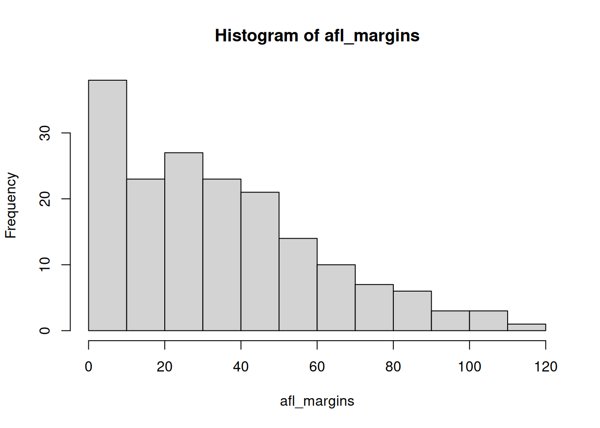
afl_margins variable). As you might expect, the larger the margin the less frequently you tend to see it.
Drawing pictures of the data, as I did in Figure 5.1, is an excellent way to convey the “gist” of what the data is trying to tell you, but it’s often extremely useful to try to condense the data into a few simple “summary” statistics. In most situations, the first thing that you’ll want to calculate is a measure of central tendency. That is, you’d like to know something about where the “average” or “middle” of your data lies. The three most commonly used measures are the mean, median and mode; occasionally people will also report a trimmed mean. I’ll explain each of these in turn, and then discuss when each of them is useful.
The mean of a set of observations is just a normal, old-fashioned average: add all of the values up, and then divide by the total number of values. The first five AFL margins were 56, 31, 56, 8 and 32, so the mean of these observations is just:
\[ \frac{56 + 31 + 56 + 8 + 32}{5} = \frac{183}{5} = 36.60 \]
Of course, this definition of the mean isn’t news to anyone: averages (i.e., means) are used so often in everyday life that this is pretty familiar stuff. However, since the concept of a mean is something that everyone already understands, I’ll use this as an excuse to start introducing some of the mathematical notation that statisticians use to describe this calculation, and talk about how the calculations would be done in R.
The first piece of notation to introduce is \(N\), which we’ll use to refer to the number of observations that we’re averaging (in this case \(N = 5\)). Next, we need to attach a label to the observations themselves. It’s traditional to use \(X\) for this, and to use subscripts to indicate which observation we’re actually talking about. That is, we’ll use \(X_1\) to refer to the first observation, \(X_2\) to refer to the second observation, and so on, all the way up to \(X_N\) for the last one. Or, to say the same thing in a slightly more abstract way, we use \(X_i\) to refer to the \(i\)-th observation. Just to make sure we’re clear on the notation, the following table lists the 5 observations in the afl_margins variable, along with the mathematical symbol used to refer to it, and the actual value that the observation corresponds to:
| the observation | its symbol | the observed value |
|---|---|---|
| winning margin, game 1 | \(X_1\) | 56 points |
| winning margin, game 2 | \(X_2\) | 31 points |
| winning margin, game 3 | \(X_3\) | 56 points |
| winning margin, game 4 | \(X_4\) | 8 points |
| winning margin, game 5 | \(X_5\) | 32 points |
Okay, now let’s try to write a formula for the mean. By tradition, we use \(\bar{X}\) as the notation for the mean. So the calculation for the mean could be expressed using the following formula:
\[ \bar{X} = \frac{X_1 + X_2 + ... + X_{N-1} + X_N}{N} \]
This formula is entirely correct, but it’s terribly long, so we make use of the summation symbol \(\sum\) to shorten it.2 If I want to add up the first five observations, I could write out the sum the long way, \(X_1 + X_2 + X_3 + X_4 +X_5\) or I could use the summation symbol to shorten it to this:
2 The choice to use \(\Sigma\) to denote summation isn’t arbitrary: it’s the Greek upper case letter sigma, which is the analogue of the letter S in that alphabet. Similarly, there’s an equivalent symbol used to denote the multiplication of lots of numbers: because multiplications are also called “products”, we use the \(\Pi\) symbol for this; the Greek upper case pi, which is the analogue of the letter P.
\[ \sum_{i=1}^5 X_i \]
Taken literally, this could be read as “the sum, taken over all \(i\) values from 1 to 5, of the value \(X_i\)”. But basically, what it means is “add up the first five observations”. In any case, we can use this notation to write out the formula for the mean, which looks like this:
\[ \bar{X} = \frac{1}{N} \sum_{i=1}^N X_i \]
In all honesty, I can’t imagine that all this mathematical notation helps clarify the concept of the mean at all. In fact, it’s really just a fancy way of writing out the same thing I said in words: add all the values up, and then divide by the total number of items. However, that’s not really the reason I went into all that detail. My goal was to try to make sure that everyone reading this book is clear on the notation that we’ll be using throughout the book: \(\bar{X}\) for the mean, \(\sum\) for the idea of summation, \(X_i\) for the \(i\)th observation, and \(N\) for the total number of observations. We’re going to be re-using these symbols a fair bit, so it’s important that you understand them well enough to be able to “read” the equations, and to be able to see that it’s just saying “add up lots of things and then divide by another thing”.
Okay that’s the maths, how do we get the magic computing box to do the work for us? If you really wanted to, you could do this calculation directly in R. For the first 5 AFL scores, do this just by typing it in as if R were a calculator…
(56 + 31 + 56 + 8 + 32) / 5[1] 36.6… in which case R outputs the answer 36.6, just as if it were a calculator. However, that’s not the only way to do the calculations, and when the number of observations starts to become large, it’s easily the most tedious. Besides, in almost every real world scenario, you’ve already got the actual numbers stored in a variable of some kind, just like we have with the afl_margins variable. Under those circumstances, what you want is a function that will just add up all the values stored in a numeric vector. That’s what the sum() function does. If we want to add up all 176 winning margins in the data set, we can do so using the following command:3
3 Note that, just as we saw with the combine function c() and the remove function rm(), the sum() function has unnamed arguments. I’ll talk about unnamed arguments later, but for now let’s just ignore this detail.
sum(afl_margins)[1] 6213If we only want the sum of the first five observations, then we can use square brackets to pull out only the first five elements of the vector. So the command would now be:
sum(afl_margins[1:5])[1] 183To calculate the mean, we now tell R to divide the output of this summation by five, so the command that we need to type now becomes the following:
sum(afl_margins[1:5]) / 5[1] 36.6Although it’s pretty easy to calculate the mean using the sum() function, we can do it in an even easier way, since R also provides us with the mean() function. To calculate the mean for all 176 games, we would use the following command:
mean(x = afl_margins)[1] 35.30114However, since x is the first argument to the function, I could have omitted the argument name. In any case, just to show you that there’s nothing funny going on, here’s what we would do to calculate the mean for the first five observations:
mean(afl_margins[1:5])[1] 36.6As you can see, this gives exactly the same answers as the previous calculations.
The second measure of central tendency that people use a lot is the median, and it’s even easier to describe than the mean. The median of a set of observations is just the middle value. As before let’s imagine we were interested only in the first 5 AFL winning margins: 56, 31, 56, 8 and 32. To figure out the median, we sort these numbers into ascending order:
\[ 8, 31, \mathbf{32}, 56, 56 \]
From inspection, it’s obvious that the median value of these 5 observations is 32, since that’s the middle one in the sorted list (I’ve put it in bold to make it even more obvious). Easy stuff. But what should we do if we were interested in the first 6 games rather than the first 5? Since the sixth game in the season had a winning margin of 14 points, our sorted list is now
\[ 8, 14, \mathbf{31}, \mathbf{32}, 56, 56 \]
and there are two middle numbers, 31 and 32. The median is defined as the average of those two numbers, which is of course 31.5. As before, it’s very tedious to do this by hand when you’ve got lots of numbers. To illustrate this, here’s what happens when you use R to sort all 176 winning margins. First, I’ll use the sort() function (discussed in Chapter 7) to display the winning margins in increasing numerical order:
sort(x = afl_margins) [1] 0 0 1 1 1 1 2 2 3 3 3 3 3 3 3 3 4 4
[19] 5 6 7 7 8 8 8 8 8 9 9 9 9 9 9 10 10 10
[37] 10 10 11 11 11 12 12 12 13 14 14 15 16 16 16 16 18 19
[55] 19 19 19 19 20 20 20 21 21 22 22 22 23 23 23 24 24 25
[73] 25 26 26 26 26 27 27 28 28 29 29 29 29 29 29 30 31 32
[91] 32 33 35 35 35 35 36 36 36 36 36 36 37 38 38 38 38 38
[109] 39 39 40 41 42 43 43 44 44 44 44 44 47 47 47 48 48 48
[127] 49 49 50 50 50 50 52 52 53 53 54 54 55 55 55 56 56 56
[145] 57 60 61 61 63 64 65 65 66 67 68 70 71 71 72 73 75 75
[163] 76 81 82 82 83 84 89 94 95 98 101 104 108 116The middle values are 30 and 31, so the median winning margin for 2010 was 30.5 points. In real life, of course, no-one actually calculates the median by sorting the data and then looking for the middle value. In real life, we use the median command:
median(x = afl_margins)[1] 30.5which outputs the median value of 30.5.
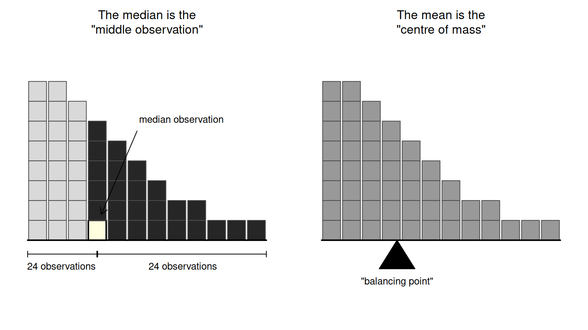
Knowing how to calculate means and medians is only a part of the story. You also need to understand what each one is saying about the data, and what that implies for when you should use each one. This is illustrated in Figure 5.2: the mean is kind of like the “centre of gravity” of the data set, whereas the median is the “middle value” in the data. What this implies, as far as which one you should use, depends a little on what type of data you’ve got and what you’re trying to achieve. As a rough guide:
Let’s expand on that last part a little. One consequence is that there’s systematic differences between the mean and the median when the histogram is asymmetric (skewed; see Skew and kurtosis). This is illustrated in Figure 5.2: notice that the median is typically located closer to the “body” of the histogram, whereas the mean gets dragged towards the “tail” (where the extreme values are). To give a concrete example, suppose Bob (income $50,000), Kate (income $60,000) and Jane (income $65,000) are sitting at a table: the average income at the table is $58,333 and the median income is $60,000. Then Bill sits down with them (income $100,000,000). The average income has now jumped to $25,043,750 but the median rises only to $62,500. If you’re interested in looking at the overall income at the table, the mean might be the right answer; but if you’re interested in what counts as a typical income at the table, the median would be a better choice here.
To try to get a sense of why you need to pay attention to the differences between the mean and the median, let’s consider a real life example. Since I tend to mock journalists for their poor scientific and statistical knowledge, I should give credit where credit is due. This is from an excellent article on the ABC news website4 24 September, 2010:
Senior Commonwealth Bank executives have travelled the world in the past couple of weeks with a presentation showing how Australian house prices, and the key price to income ratios, compare favourably with similar countries. “Housing affordability has actually been going sideways for the last five to six years,” said Craig James, the chief economist of the bank’s trading arm, CommSec.
This probably comes as a huge surprise to anyone with a mortgage, or who wants a mortgage, or pays rent, or isn’t completely oblivious to what’s been going on in the Australian housing market over the last several years. Back to the article:
CBA has waged its war against what it believes are housing doomsayers with graphs, numbers and international comparisons. In its presentation, the bank rejects arguments that Australia’s housing is relatively expensive compared to incomes. It says Australia’s house price to household income ratio of 5.6 in the major cities, and 4.3 nationwide, is comparable to many other developed nations. It says San Francisco and New York have ratios of 7, Auckland’s is 6.7, and Vancouver comes in at 9.3.
More excellent news! Except, the article goes on to make the observation that…
Many analysts say that has led the bank to use misleading figures and comparisons. If you go to page four of CBA’s presentation and read the source information at the bottom of the graph and table, you would notice there is an additional source on the international comparison – Demographia. However, if the Commonwealth Bank had also used Demographia’s analysis of Australia’s house price to income ratio, it would have come up with a figure closer to 9 rather than 5.6 or 4.3
That’s, um, a rather serious discrepancy. One group of people say 9, another says 4-5. Should we just split the difference, and say the truth lies somewhere in between? Absolutely not: this is a situation where there is a right answer and a wrong answer. Demographia are correct, and the Commonwealth Bank is incorrect. As the article points out
[An] obvious problem with the Commonwealth Bank’s domestic price to income figures is they compare average incomes with median house prices (unlike the Demographia figures that compare median incomes to median prices). The median is the mid-point, effectively cutting out the highs and lows, and that means the average is generally higher when it comes to incomes and asset prices, because it includes the earnings of Australia’s wealthiest people. To put it another way: the Commonwealth Bank’s figures count Ralph Norris’ multi-million dollar pay packet on the income side, but not his (no doubt) very expensive house in the property price figures, thus understating the house price to income ratio for middle-income Australians.
Couldn’t have put it better myself. The way that Demographia calculated the ratio is the right thing to do. The way that the Bank did it is incorrect. As for why an extremely quantitatively sophisticated organisation such as a major bank made such an elementary mistake, well… I can’t say for sure, since I have no special insight into their thinking, but the article itself does happen to mention the following facts, which may or may not be relevant:
[As] Australia’s largest home lender, the Commonwealth Bank has one of the biggest vested interests in house prices rising. It effectively owns a massive swathe of Australian housing as security for its home loans as well as many small business loans.
My, my.
One of the fundamental rules of applied statistics is that the data are messy. Real life is never simple, and so the data sets that you obtain are never as straightforward as the statistical theory says.5 This can have awkward consequences. To illustrate, consider this rather strange looking data set:
5 Or at least, the basic statistical theory – these days there is a whole subfield of statistics called robust statistics that tries to grapple with the messiness of real data and develop theory that can cope with it.
\[ -100,2,3,4,5,6,7,8,9,10 \]
If you were to observe this in a real life data set, you’d probably suspect that something funny was going on with the \(-100\) value. It’s probably an outlier, a value that doesn’t really belong with the others. You might consider removing it from the data set entirely, and in this particular case I’d probably agree with that course of action. In real life, however, you don’t always get such cut-and-dried examples. For instance, you might get this instead:
\[ -15,2,3,4,5,6,7,8,9,12 \]
The \(-15\) looks a bit suspicious, but not anywhere near as much as that \(-100\) did. In this case, it’s a little trickier. It might be a legitimate observation, it might not.
When faced with a situation where some of the most extreme-valued observations might not be quite trustworthy, the mean is not necessarily a good measure of central tendency. It is highly sensitive to one or two extreme values, and is thus not considered to be a robust measure. One remedy that we’ve seen is to use the median. A more general solution is to use a “trimmed mean”. To calculate a trimmed mean, what you do is “discard” the most extreme examples on both ends (i.e., the largest and the smallest), and then take the mean of everything else. The goal is to preserve the best characteristics of the mean and the median: just like a median, you aren’t highly influenced by extreme outliers, but like the mean, you “use” more than one of the observations. Generally, we describe a trimmed mean in terms of the percentage of observation on either side that are discarded. So, for instance, a 10% trimmed mean discards the largest 10% of the observations and the smallest 10% of the observations, and then takes the mean of the remaining 80% of the observations. Not surprisingly, the 0% trimmed mean is just the regular mean, and the 50% trimmed mean is the median. In that sense, trimmed means provide a whole family of central tendency measures that span the range from the mean to the median.
For our toy example above, we have 10 observations, and so a 10% trimmed mean is calculated by ignoring the largest value (i.e., 12) and the smallest value (i.e., -15) and taking the mean of the remaining values. First, let’s enter the data
dataset <- c(-15, 2, 3, 4, 5, 6, 7, 8, 9, 12)Next, let’s calculate means and medians:
mean(x = dataset)[1] 4.1median(x = dataset)[1] 5.5That’s a fairly substantial difference, but I’m tempted to think that the mean is being influenced a bit too much by the extreme values at either end of the data set, especially the \(-15\) one. So let’s just try trimming the mean a bit. If I take a 10% trimmed mean, we’ll drop the extreme values on either side, and take the mean of the rest:
mean(x = dataset, trim = .1)[1] 5.5which in this case gives exactly the same answer as the median. Note that, to get a 10% trimmed mean you write trim = .1, not trim = 10. In any case, let’s finish up by calculating the 5% trimmed mean for the afl_margins data,
mean(x = afl_margins, trim = .05)[1] 33.75The mode of a sample is very simple: it is the value that occurs most frequently. To illustrate the mode using the AFL data, let’s examine a different aspect to the data set. Who has played in the most finals? The afl_finalists variable is a factor that contains the name of every team that played in any AFL final from 1987-2010, so let’s have a look at it:
print(afl_finalists) [1] Hawthorn Melbourne Carlton Melbourne
[5] Hawthorn Carlton Melbourne Carlton
[9] Hawthorn Melbourne Melbourne Hawthorn
[13] Melbourne Essendon Hawthorn Geelong
BLAH BLAH BLAH
[385] Collingwood Brisbane Adelaide Western Bulldogs
[389] Collingwood Geelong St Kilda Hawthorn
[393] Western Bulldogs Carlton Fremantle Sydney
[397] Geelong Western Bulldogs St Kilda St Kilda
17 Levels: Adelaide Brisbane Carlton Collingwood Essendon Fitzroy ... Western BulldogsWhat we could do is read through all 400 entries, and count the number of occasions on which each team name appears in our list of finalists, thereby producing a frequency table. However, that would be mindless and boring: exactly the sort of task that computers are great at. So let’s use the table() function to do this task for us:
table(afl_finalists)afl_finalists
Adelaide Brisbane Carlton Collingwood
26 25 26 28
Essendon Fitzroy Fremantle Geelong
32 0 6 39
Hawthorn Melbourne North Melbourne Port Adelaide
27 28 28 17
Richmond St Kilda Sydney West Coast
6 24 26 38
Western Bulldogs
24 Now that we have our frequency table, we can just look at it and see that, over the 24 years for which we have data, Geelong has played in more finals than any other team. Thus, the mode of the finalists data is "Geelong". The core packages in R don’t have a function for calculating the mode.6 However, I’ve included a function in the lsr package that does this. The function is called modeOf(), and here’s how you use it:
6 As we saw earlier, it does have a function called mode(), but it does something completely different.
modeOf(x = afl_finalists)[1] "Geelong"There’s also a function called maxFreq() that tells you what the modal frequency is. If we apply this function to our finalists data, we obtain the following:
maxFreq(x = afl_finalists)[1] 39Taken together, we observe that Geelong (39 finals) played in more finals than any other team during the 1987-2010 period.
One last point to make with respect to the mode. While it’s generally true that the mode is most often calculated when you have nominal scale data (because means and medians are useless for those sorts of variables), there are some situations in which you really do want to know the mode of an ordinal, interval or ratio scale variable. For instance, let’s go back to thinking about our afl_margins variable. This variable is clearly ratio scale, and so in most situations the mean or the median is the measure of central tendency that you want. But consider this scenario… a friend of yours is offering a bet. They pick a football game at random, and (without knowing who is playing) you have to guess the exact margin. If you guess correctly, you win $50. If you don’t, you lose $1. There are no consolation prizes for “almost” getting the right answer. You have to guess exactly the right margin.7 For this bet, the mean and the median are completely useless to you. It is the mode that you should bet on. So, we calculate this modal value
7 This is called a “0-1 loss function”, meaning that you either win (1) or you lose (0), with no middle ground.
modeOf(x = afl_margins)[1] 3maxFreq(x = afl_margins)[1] 8So the 2010 data suggest you should bet on a 3 point margin, and since this was observed in 8 of the 176 game (4.5% of games) the odds are firmly in your favour.
The statistics that we’ve discussed so far all relate to central tendency. That is, they all talk about which values are “in the middle” or “popular” in the data. However, central tendency is not the only type of summary statistic that we want to calculate. The second thing that we really want is a measure of the variability of the data. That is, how “spread out” are the data? How “far” away from the mean or median do the observed values tend to be? For now, let’s assume that the data are interval or ratio scale, so we’ll continue to use the afl_margins data. We’ll use this data to discuss several different measures of spread, each with different strengths and weaknesses.
The range of a variable is very simple: it’s the biggest value minus the smallest value. For the AFL winning margins data, the maximum value is 116, and the minimum value is 0. We can calculate these values in R using the max() and min() functions:
max(afl_margins)
min(afl_margins)where I’ve omitted the output because it’s not interesting. The other possibility is to use the range() function; which outputs both the minimum value and the maximum value in a vector, like this:
range(afl_margins)[1] 0 116Although the range is the simplest way to quantify the notion of “variability”, it’s one of the worst. Recall from our discussion of the mean that we want our summary measure to be robust. If the data set has one or two extremely bad values in it, we’d like our statistics not to be unduly influenced by these cases. If we look once again at our toy example of a data set containing very extreme outliers…
\[ -100,2,3,4,5,6,7,8,9,10 \]
… it is clear that the range is not robust, since this has a range of 110, but if the outlier were removed we would have a range of only 8.
The interquartile range (IQR) is like the range, but instead of calculating the difference between the biggest and smallest value, it calculates the difference between the 25th quantile and the 75th quantile. Probably you already know what a quantile is (they’re more commonly called percentiles), but if not: the 10th percentile of a data set is the smallest number \(x\) such that 10% of the data is less than \(x\). In fact, we’ve already come across the idea: the median of a data set is its 50th quantile / percentile! R actually provides you with a way of calculating quantiles, using the (surprise, surprise) quantile() function. Let’s use it to calculate the median AFL winning margin:
quantile(x = afl_margins, probs = .5) 50%
30.5 And not surprisingly, this agrees with the answer that we saw earlier with the median() function. Now, we can actually input lots of quantiles at once, by specifying a vector for the probs argument. So lets do that, and get the 25th and 75th percentile:
quantile(x = afl_margins, probs = c(.25, .75)) 25% 75%
12.75 50.50 And, by noting that \(50.5 - 12.75 = 37.75\), we can see that the interquartile range for the 2010 AFL winning margins data is 37.75. Of course, that seems like too much work to do all that typing, so R has a built in function called IQR() that we can use:
IQR(x = afl_margins)[1] 37.75While it’s obvious how to interpret the range, it’s a little less obvious how to interpret the IQR. The simplest way to think about it is like this: the interquartile range is the range spanned by the “middle half” of the data. That is, one quarter of the data falls below the 25th percentile, one quarter of the data is above the 75th percentile, leaving the “middle half” of the data lying in between the two. And the IQR is the range covered by that middle half.
The two measures we’ve looked at so far, the range and the interquartile range, both rely on the idea that we can measure the spread of the data by looking at the quantiles of the data. However, this isn’t the only way to think about the problem. A different approach is to select a meaningful reference point (usually the mean or the median) and then report the “typical” deviations from that reference point. What do we mean by “typical” deviation? Usually, the mean or median value of these deviations! In practice, this leads to two different measures, the “mean absolute deviation (from the mean)” and the “median absolute deviation (from the median)”. From what I’ve read, the measure based on the median seems to be used in statistics, and does seem to be the better of the two, but to be honest I don’t think I’ve seen it used much in psychology. The measure based on the mean does occasionally show up in psychology though. In this section I’ll talk about the first one, and I’ll come back to talk about the second one later.
Since the previous paragraph might sound a little abstract, let’s go through the mean absolute deviation from the mean a little more slowly. One useful thing about this measure is that the name actually tells you exactly how to calculate it. Let’s think about our AFL winning margins data, and once again we’ll start by pretending that there’s only 5 games in total, with winning margins of 56, 31, 56, 8 and 32. Since our calculations rely on an examination of the deviation from some reference point (in this case the mean), the first thing we need to calculate is the mean, \(\bar{X}\). For these five observations, our mean is \(\bar{X} = 36.6\). The next step is to convert each of our observations \(X_i\) into a deviation score. We do this by calculating the difference between the observation \(X_i\) and the mean \(\bar{X}\). That is, the deviation score is defined to be \(X_i - \bar{X}\). For the first observation in our sample, this is equal to \(56 - 36.6 = 19.4\). Okay, that’s simple enough. The next step in the process is to convert these deviations to absolute deviations. We do this by converting any negative values to positive ones. Mathematically, we would denote the absolute value of \(-3\) as \(|-3|\), and so we say that \(|-3| = 3\). We use the absolute value function here because we don’t really care whether the value is higher than the mean or lower than the mean, we’re just interested in how close it is to the mean. To help make this process as obvious as possible, the table below shows these calculations for all five observations:
| which game | value | deviation from mean (\(X_i - \bar{X}\)) | absolute deviation (\(\lvert X_i - \bar{X} \rvert\)) |
|---|---|---|---|
| 1 | 56 | 19.4 | 19.4 |
| 2 | 31 | -5.6 | 5.6 |
| 3 | 56 | 19.4 | 19.4 |
| 4 | 8 | -28.6 | 28.6 |
| 5 | 32 | -4.6 | 4.6 |
Now that we have calculated the absolute deviation score for every observation in the data set, all that we have to do to calculate the mean of these scores. Let’s do that:
\[ \frac{19.4 + 5.6 + 19.4 + 28.6 + 4.6}{5} = 15.52 \]
And we’re done. The mean absolute deviation for these five scores is 15.52.
However, while our calculations for this little example are at an end, we do have a couple of things left to talk about. Firstly, we should really try to write down a proper mathematical formula. But in order to do this I need some mathematical notation to refer to the mean absolute deviation. Irritatingly, “mean absolute deviation” and “median absolute deviation” have the same acronym (MAD), which leads to a certain amount of ambiguity, and since R tends to use MAD to refer to the median absolute deviation, I’d better come up with something different for the mean absolute deviation. Sigh. What I’ll do is use AAD instead, short for average absolute deviation. Now that we have some unambiguous notation, here’s the formula that describes what we just calculated:
\[ \text{AAD}(X) = \frac{1}{N} \sum_{i = 1}^N |X_i - \bar{X}| \]
The last thing we need to talk about is how to calculate AAD in R. One possibility would be to do everything using low level commands, laboriously following the same steps that I used when describing the calculations above. However, that’s pretty tedious. You’d end up with a series of commands that might look like this:
X <- c(56, 31, 56, 8, 32) # enter the data
x_bar <- mean(X) # step 1. the mean of the data
AD <- abs(X - x_bar) # step 2. the absolute deviations from the mean
AAD <- mean(AD) # step 3. the mean absolute deviations
print(AAD) # print the results[1] 15.52Each of those commands is pretty simple, but there’s just too many of them. And because I find that to be too much typing, the lsr package has a very simple function called aad() that does the calculations for you. If we apply the aad() function to our data, we get this:
aad(X)[1] 15.52No surprises there.
Although the mean absolute deviation measure has its uses, it’s not the best measure of variability to use. From a purely mathematical perspective, there are some solid reasons to prefer squared deviations rather than absolute deviations. If we do that, we obtain a measure is called the variance, which has a lot of really nice statistical properties that I’m going to ignore,8 and one massive psychological flaw that I’m going to make a big deal out of in a moment. The variance of a data set \(X\) is sometimes written as \(\text{Var}(X)\), but it’s more commonly denoted \(s^2\) (the reason for this will become clearer shortly). The formula that we use to calculate the variance of a set of observations is as follows:
8 Well, I will very briefly mention the one that I think is coolest, for a very particular definition of “cool”, that is. Variances are additive. Here’s what that means: suppose I have two variables \(X\) and \(Y\), whose variances are \(\text{Var}(X)\) and \(\text{Var}(Y)\) respectively. Now imagine I want to define a new variable \(Z\) that is the sum of the two, \(Z = X+Y\). As it turns out, the variance of \(Z\) is equal to \(\text{Var}(X) + \text{Var}(Y)\). This is a very useful property, but it’s not true of the other measures that I talk about in this section.
\[ \text{Var}(X) = \frac{1}{N} \sum_{i=1}^N \left( X_i - \bar{X} \right)^2 \]
As you can see, it’s basically the same formula that we used to calculate the mean absolute deviation, except that instead of using “absolute deviations” we use “squared deviations”. It is for this reason that the variance is sometimes referred to as the “mean square deviation”.
Now that we’ve got the basic idea, let’s have a look at a concrete example. Once again, let’s use the first five AFL games as our data. If we follow the same approach that we took last time, we end up with the following table:
| which game | value | deviation from mean (\(X_i - \bar{X}\)) | squared deviation (\((X_i - \bar{X})^2\)) |
|---|---|---|---|
| 1 | 56 | 19.4 | 376.36 |
| 2 | 31 | -5.6 | 31.36 |
| 3 | 56 | 19.4 | 376.36 |
| 4 | 8 | -28.6 | 817.96 |
| 5 | 32 | -4.6 | 21.16 |
That last column contains all of our squared deviations, so all we have to do is average them. If we do that by typing all the numbers into R by hand…
(376.36 + 31.36 + 376.36 + 817.96 + 21.16) / 5[1] 324.64… we end up with a variance of 324.64. Exciting, isn’t it? For the moment, let’s ignore the burning question that you’re all probably thinking (i.e., what the heck does a variance of 324.64 actually mean?) and instead talk a bit more about how to do the calculations in R, because this will reveal something very weird.
As always, we want to avoid having to type in a whole lot of numbers ourselves. And as it happens, we have the vector X lying around, which we created in the previous section. With this in mind, we can calculate the variance of X by using the following command,
mean((X - mean(X))^2)[1] 324.64and as usual we get the same answer as the one that we got when we did everything by hand. However, I still think that this is too much typing. Fortunately, R has a built in function called var() which does calculate variances. So we could also do this…
var(X)[1] 405.8and you get the same… no, wait… you get a completely different answer. That’s just weird. Is R broken? Is this a typo? Is Danielle an idiot?
As it happens, the answer is no.9 It’s not a typo, and R is not making a mistake. To get a feel for what’s happening, let’s stop using the tiny data set containing only 5 data points, and switch to the full set of 176 games that we’ve got stored in our afl_margins vector. First, let’s calculate the variance by using the formula that I described above:
9 With the possible exception of the third question.
mean((afl_margins - mean(afl_margins))^2)[1] 675.9718Now let’s use the var() function:
var(afl_margins)[1] 679.8345Hm. These two numbers are very similar this time. That seems like too much of a coincidence to be a mistake. And of course it isn’t a mistake. In fact, it’s very simple to explain what R is doing here, but slightly trickier to explain why R is doing it. So let’s start with the “what”. What R is doing is evaluating a slightly different formula to the one I showed you above. Instead of averaging the squared deviations, which requires you to divide by the number of data points \(N\), R has chosen to divide by \(N-1\). In other words, the formula that R is using is this one
\[ \frac{1}{N-1} \sum_{i=1}^N \left( X_i - \bar{X} \right)^2 \]
It’s easy enough to verify that this is what’s happening, as the following command illustrates:
sum((X - mean(X))^2) / 4[1] 405.8This is the same answer that R gave us originally when we calculated var(X) originally. So that’s the what. The real question is why R is dividing by \(N-1\) and not by \(N\). After all, the variance is supposed to be the mean squared deviation, right? So shouldn’t we be dividing by \(N\), the actual number of observations in the sample? Well, yes, we should. However, as we’ll discuss in Chapter 10, there’s a subtle distinction between “describing a sample” and “making guesses about the population from which the sample came”. Up to this point, it’s been a distinction without a difference. Regardless of whether you’re describing a sample or drawing inferences about the population, the mean is calculated exactly the same way. Not so for the variance, or the standard deviation, or for many other measures besides. What I outlined to you initially (i.e., take the actual average, and thus divide by \(N\)) assumes that you literally intend to calculate the variance of the sample. Most of the time, however, you’re not terribly interested in the sample in and of itself. Rather, the sample exists to tell you something about the world. If so, you’re actually starting to move away from calculating a “sample statistic”, and towards the idea of estimating a “population parameter”. However, I’m getting ahead of myself. For now, let’s just take it on faith that R knows what it’s doing, and we’ll revisit the question later on when we talk about estimation in Chapter 10.
Okay, one last thing. This section so far has read a bit like a mystery novel. I’ve shown you how to calculate the variance, described the weird “\(N-1\)” thing that R does and hinted at the reason why it’s there, but I haven’t mentioned the single most important thing… how do you interpret the variance? Descriptive statistics are supposed to describe things, after all, and right now the variance is really just a gibberish number. Unfortunately, the reason why I haven’t given you the human-friendly interpretation of the variance is that there really isn’t one. This is the most serious problem with the variance. Although it has some elegant mathematical properties that suggest that it really is a fundamental quantity for expressing variation, it’s completely useless if you want to communicate with an actual human… variances are completely uninterpretable in terms of the original variable! All the numbers have been squared, and they don’t mean anything anymore. This is a huge issue. For instance, according to the table I presented earlier, the margin in game 1 was “376.36 points-squared higher than the average margin”. This is exactly as stupid as it sounds; and so when we calculate a variance of 324.64, we’re in the same situation. I’ve watched a lot of footy games, and never has anyone referred to “points squared”. It’s not a real unit of measurement, and since the variance is expressed in terms of this gibberish unit, it is totally meaningless to a human.
Okay, suppose that you like the idea of using the variance because of those nice mathematical properties that I haven’t talked about, but – since you’re a human and not a robot – you’d like to have a measure that is expressed in the same units as the data itself (i.e., points, not points-squared). What should you do? The solution to the problem is obvious: take the square root of the variance, known as the standard deviation, also called the “root mean squared deviation”, or RMSD. This solves our problem fairly neatly: while nobody has a clue what “a variance of 324.68 points-squared” really means, it’s much easier to understand “a standard deviation of 18.01 points”, since it’s expressed in the original units. It is traditional to refer to the standard deviation of a sample of data as \(s\), though “sd” and “std dev.” are also used at times. Because the standard deviation is equal to the square root of the variance, you probably won’t be surprised to see that the formula is:
\[ s = \sqrt{ \frac{1}{N} \sum_{i=1}^N \left( X_i - \bar{X} \right)^2 } \]
and the R function that we use to calculate it is sd(). However, as you might have guessed from our discussion of the variance, what R actually calculates is slightly different to the formula given above. Just like we saw with the variance, what R calculates is a version that divides by \(N-1\) rather than \(N\). For reasons that will make sense when we return to this topic in Chapter 10 I’ll refer to this new quantity as \(\hat\sigma\) (read as: “sigma hat”), and the formula for this is
\[ \hat\sigma = \sqrt{ \frac{1}{N-1} \sum_{i=1}^N \left( X_i - \bar{X} \right)^2 } \]
With that in mind, calculating standard deviations in R is simple:
sd(afl_margins)[1] 26.07364Interpreting standard deviations is slightly more complex. Because the standard deviation is derived from the variance, and the variance is a quantity that has little to no meaning that makes sense to us humans, the standard deviation doesn’t have a simple interpretation. As a consequence, most of us just rely on a simple rule of thumb: in general, you should expect 68% of the data to fall within 1 standard deviation of the mean, 95% of the data to fall within 2 standard deviations of the mean, and 99.7% of the data to fall within 3 standard deviations of the mean. This rule tends to work pretty well most of the time, but it’s not exact: it’s actually calculated based on an assumption that the histogram is symmetric and “bell shaped”.10 As you can tell from looking at the AFL winning margins histogram in Figure 5.1, this isn’t exactly true of our data! Even so, the rule is approximately correct. As it turns out, 65.3% of the AFL margins data fall within one standard deviation of the mean, shown as the shaded region in Figure 5.3.
10 Strictly, the assumption is that the data are normally distributed, which is an important concept that we’ll discuss more in Chapter 9, and will turn up over and over again later in the book.
sum(abs(afl_margins - mean(afl_margins)) < sd(afl_margins)) / length(afl_margins)[1] 0.6534091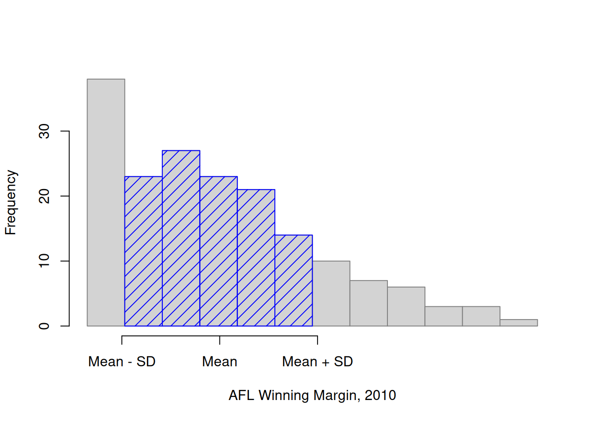
The last measure of variability that I want to talk about is the median absolute deviation (MAD). The basic idea behind MAD is very simple, and is pretty much identical to the idea behind the mean absolute deviation (Mean absolute deviation). The difference is that you use the median everywhere. If we were to frame this idea as a pair of R commands, they would look like this:
# mean absolute deviation from the mean:
mean(abs(afl_margins - mean(afl_margins)))[1] 21.10124# *median* absolute deviation from the *median*:
median(abs(afl_margins - median(afl_margins)))[1] 19.5This has a straightforward interpretation: every observation in the data set lies some distance away from the typical value (the median). So the MAD is an attempt to describe a typical deviation from a typical value in the data set. It wouldn’t be unreasonable to interpret the MAD value of 19.5 for our AFL data by saying something like this:
The median winning margin in 2010 was 30.5, indicating that a typical game involved a winning margin of about 30 points. However, there was a fair amount of variation from game to game: the MAD value was 19.5, indicating that a typical winning margin would differ from this median value by about 19-20 points.
As you’d expect, R has a built in function for calculating MAD, and you will be shocked no doubt to hear that it’s called mad(). However, it’s a little bit more complicated than the functions that we’ve been using previously. If you want to use it to calculate MAD in the exact same way that I have described it above, the command that you need to use specifies two arguments: the data set itself x, and a constant that I’ll explain in a moment. For our purposes, the constant is 1, so our command becomes
mad(x = afl_margins, constant = 1)[1] 19.5Apart from the weirdness of having to type that constant = 1 part, this is pretty straightforward.
Okay, so what exactly is this constant = 1 argument? I won’t go into all the details here, but here’s the gist. Although the “raw” MAD value that I’ve described above is completely interpretable on its own terms, that’s not actually how it’s used in a lot of real world contexts. Instead, what happens a lot is that the researcher actually wants to calculate the standard deviation. However, in the same way that the mean is very sensitive to extreme values, the standard deviation is vulnerable to the exact same issue. So, in much the same way that people sometimes use the median as a “robust” way of calculating “something that is like the mean”, it’s not uncommon to use MAD as a method for calculating “something that is like the standard deviation”. Unfortunately, the raw MAD value doesn’t do this. Our raw MAD value is 19.5, and our standard deviation was 26.07. However, what some clever person has shown is that, under certain assumptions,11 you can multiply the raw MAD value by 1.4826 and obtain a number that is directly comparable to the standard deviation. As a consequence, the default value of constant is 1.4826, and so when you use the mad() command without manually setting a value, here’s what you get:
11 The assumption again being that the data are normally-distributed!
mad(afl_margins)[1] 28.9107I should point out, though, that if you want to use this “corrected” MAD value as a robust version of the standard deviation, you really are relying on the assumption that the data are (or at least, are “supposed to be” in some sense) symmetric and basically shaped like a bell curve. That’s really not true for our afl_margins data, so in this case I wouldn’t try to use the MAD value this way.
We’ve discussed quite a few measures of spread (range, IQR, MAD, variance and standard deviation), and hinted at their strengths and weaknesses. Here’s a quick summary:
In short, the IQR and the standard deviation are easily the two most common measures used to report the variability of the data; but there are situations in which the others are used. I’ve described all of them in this book because there’s a fair chance you’ll run into most of these somewhere.
There are two more descriptive statistics that you will sometimes see reported in the psychological literature, known as skew and kurtosis. In practice, neither one is used anywhere near as frequently as the measures of central tendency and variability that we’ve been talking about. Skew is pretty important, so you do see it mentioned a fair bit; but I’ve actually never seen kurtosis reported in a scientific article to date.
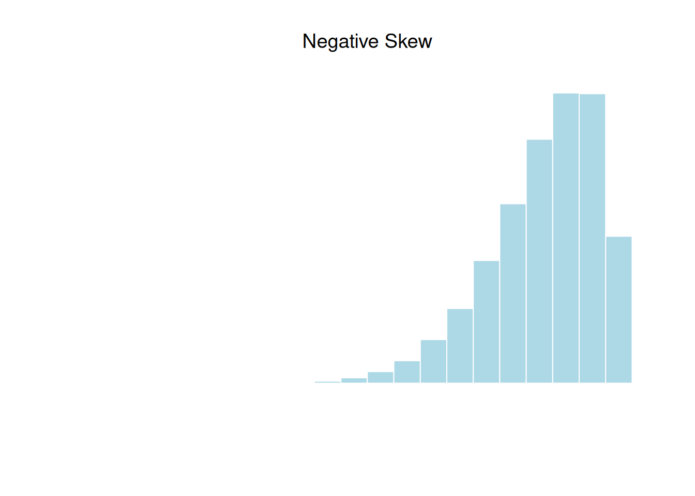
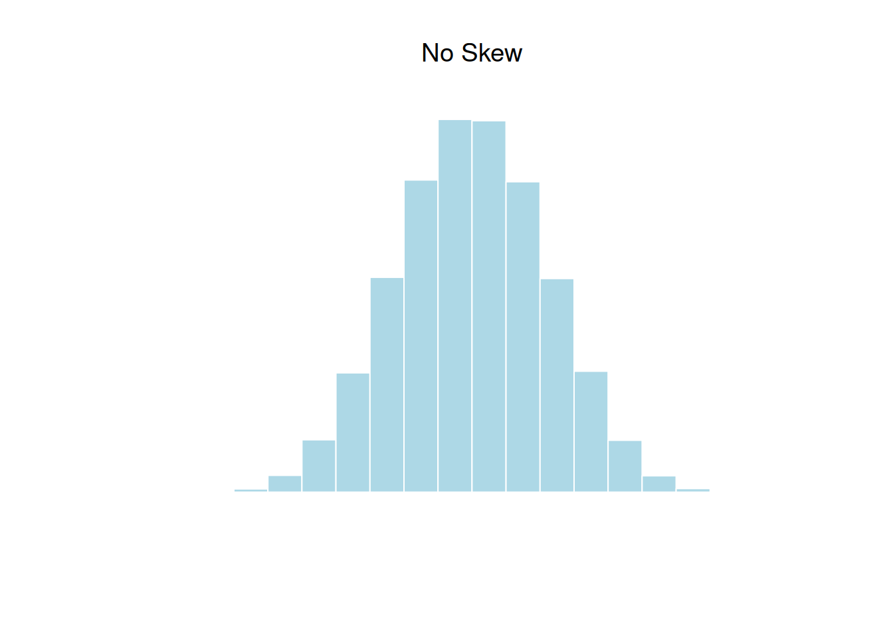
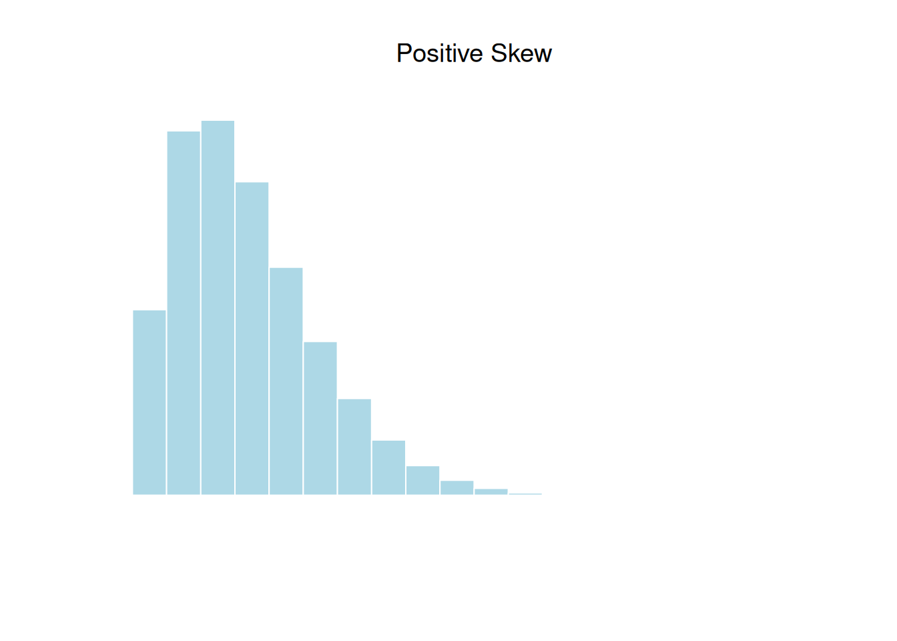
Skewness is basically a measure of asymmetry: if the data tend to have a lot of extreme small values (i.e., the lower tail is “longer” than the upper tail) and not so many extremely large values, then we say that the data are negatively skewed. On the other hand, if there are more extremely large values than extremely small ones we say that the data are positively skewed. That’s the qualitative idea behind skewness, as illustrated in Figure 5.4. The actual formula for the skewness of a data set is as follows
\[ \text{skewness}(X) = \frac{1}{N \hat{\sigma}^3} \sum_{i=1}^N (X_i - \bar{X})^3 \]
where \(N\) is the number of observations, \(\bar{X}\) is the sample mean, and \(\hat{\sigma}\) is the standard deviation (the “divide by \(N-1\)” version, that is). Perhaps more helpfully, it might be useful to point out that the psych package contains a skew() function that you can use to calculate skewness. So if we wanted to use this function to calculate the skewness of the afl_margins data, we’d first need to load the package
library(psych)which now makes it possible to use the following command:
skew(x = afl_margins)[1] 0.7671555Not surprisingly, it turns out that the AFL winning margins data is fairly skewed.
The final measure that is sometimes referred to, though very rarely in practice, is the kurtosis of a data set. Put simply, kurtosis is a measure of the “pointiness” of a data set, as illustrated in Figure 5.5. By convention, we say that the “normal curve” (black line) has zero kurtosis, so the pointiness of a data set is assessed relative to this curve. Data that are not pointy enough have negative kurtosis and are called platykurtic. Data that are too pointy have positive kurtosis and are called leptokurtic. Data that are just pointy enough are called mesokurtic and have kurtosis zero. This is summarised in the table below:
| informal term | technical name | kurtosis value |
|---|---|---|
| “too flat” | platykurtic | negative |
| “just pointy enough” | mesokurtic | zero |
| “too pointy” | leptokurtic | positive |
The equation for kurtosis is pretty similar in spirit to the formulas we’ve seen already for the variance and the skewness; except that where the variance involved squared deviations and the skewness involved cubed deviations, the kurtosis involves raising the deviations to the fourth power:12
12 The “\(-3\)” part is something that statisticians tack on to ensure that the normal curve has kurtosis zero. It looks a bit stupid, just sticking a “-3” at the end of the formula, but there are good mathematical reasons for doing this.
\[ \text{kurtosis}(X) = \frac{1}{N \hat\sigma^4} \sum_{i=1}^N \left( X_i - \bar{X} \right)^4 - 3 \]
I know, it’s not terribly interesting to me either. More to the point, the psych package has a function called kurtosi() that you can use to calculate the kurtosis of your data. For instance, if we were to do this for the AFL margins,
kurtosi(x = afl_margins)[1] 0.02962633we discover that the AFL winning margins data are just pointy enough.
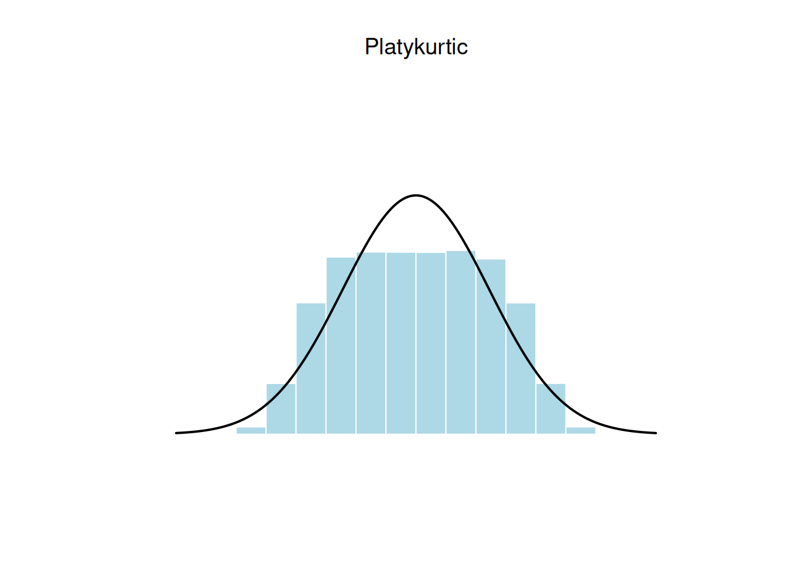
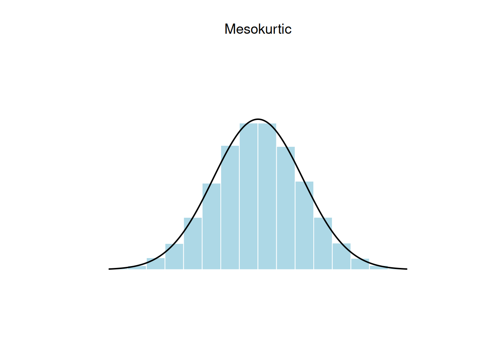
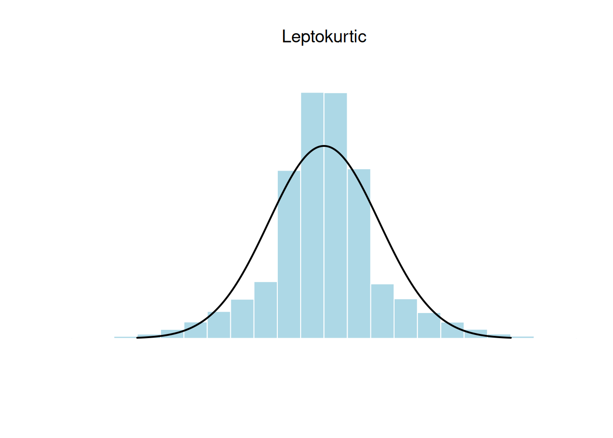
Up to this point in the chapter I’ve explained several different summary statistics that are commonly used when analysing data, along with specific functions that you can use in R to calculate each one. However, it’s kind of annoying to have to separately calculate means, medians, standard deviations, skews etc. Wouldn’t it be nice if R had some helpful functions that would do all these tedious calculations at once? Something like summary() or describe(), perhaps? Why yes, yes it would. So much so that both of these functions exist. The summary() function is in the base package, so it comes with every installation of R. The describe() function is part of the psych package, which we loaded earlier in the chapter.
The summary() function is an easy thing to use, but a tricky thing to understand in full, since it’s a generic function. The basic idea behind the summary() function is that it prints out some useful information about whatever object (i.e., variable, as far as we’re concerned) you specify as the object argument. As a consequence, the behaviour of the summary() function differs quite dramatically depending on the class of the object that you give it. Let’s start by giving it a numeric object:
summary(object = afl_margins) Min. 1st Qu. Median Mean 3rd Qu. Max.
0.00 12.75 30.50 35.30 50.50 116.00 For numeric variables, we get a whole bunch of useful descriptive statistics. It gives us the minimum and maximum values (i.e., the range), the first and third quartiles (25th and 75th percentiles; i.e., the IQR), the mean and the median. In other words, it gives us a pretty good collection of descriptive statistics related to the central tendency and the spread of the data.
Okay, what about if we feed it a logical vector instead? Let’s say I want to know something about how many “blowouts” there were in the 2010 AFL season. I operationalise the concept of a blowout as a game in which the winning margin exceeds 50 points. Let’s create a logical variable blowouts in which the \(i\)-th element is TRUE if that game was a blowout according to my definition,
blowouts <- afl_margins > 50
blowouts [1] TRUE FALSE TRUE FALSE FALSE FALSE FALSE TRUE FALSE FALSE FALSE TRUE
[13] FALSE FALSE TRUE FALSE FALSE FALSE FALSE TRUE FALSE FALSE FALSE FALSE
[25] FALSE FALSE FALSE TRUE FALSE TRUE TRUE FALSE FALSE TRUE FALSE FALSE
BLAH BLAH BLAHSo that’s what the blowouts variable looks like. Now let’s ask R for a summary()
summary(object = blowouts) Mode FALSE TRUE
logical 132 44 In this context, the summary() function gives us a count of the number of TRUE values, the number of FALSE values, and the number of missing values (i.e., the NAs). Pretty reasonable behaviour.
Next, let’s try to give it a factor. If you recall, I’ve defined the afl_finalists vector as a factor, so let’s use that:
summary(object = afl_finalists) Adelaide Brisbane Carlton Collingwood
26 25 26 28
Essendon Fitzroy Fremantle Geelong
32 0 6 39
Hawthorn Melbourne North Melbourne Port Adelaide
27 28 28 17
Richmond St Kilda Sydney West Coast
6 24 26 38
Western Bulldogs
24 For factors, we get a frequency table, just like we got when we used the table() function. Interestingly, however, if we convert this to a character vector using the as.character() function, we don’t get the same results:
f2 <- as.character(afl_finalists)
summary(object = f2) Length N.unique N.blank Min.nchar Max.nchar
400 16 0 6 16 This is one of those situations in which it is helpful to declare your nominal scale variable as a factor rather than a character vector. Because I’ve defined afl_finalists as a factor, R knows that it should treat it as a nominal scale variable, and so it gives you a much more detailed (and helpful) summary than it would have if I’d left it as a character vector.
Okay what about data frames? When you pass a data frame to the summary() function, it produces a slightly condensed summary of each variable inside the data frame. To give you a sense of how this can be useful, let’s try this for a new data set, one that you’ve never seen before. The data is stored in the clinicaltrial.Rdata file, and we’ll use it a lot in Comparing several means (one-way ANOVA). Let’s load it, and see what we’ve got:
load("data/clinicaltrial.Rdata")
who(TRUE) -- Name -- -- Class -- -- Size --
AAD numeric 1
AD numeric 5
afl_finalists factor 400
afl_margins numeric 176
blowouts logical 176
clin_trial data.frame 18 x 3
$drug factor 18
$therapy factor 18
$mood_gain numeric 18
dataset numeric 10
f2 character 400
X numeric 5
x_bar numeric 1 There’s a single data frame called clin_trial which contains three variables, drug, therapy and mood_gain. Presumably then, this data is from a clinical trial of some kind, in which people were administered different drugs; and the researchers looked to see what the drugs did to their mood. Let’s see if the summary() function sheds a little more light on this situation:
summary(clin_trial) drug therapy mood_gain
placebo :6 no.therapy:9 Min. :0.1000
anxifree:6 CBT :9 1st Qu.:0.4250
joyzepam:6 Median :0.8500
Mean :0.8833
3rd Qu.:1.3000
Max. :1.8000 Evidently there were three drugs: a placebo, something called “anxifree” and something called “joyzepam”; and there were 6 people administered each drug. There were 9 people treated using cognitive behavioural therapy (CBT) and 9 people who received no psychological treatment. And we can see from looking at the summary of the mood_gain variable that most people did show a mood gain (mean \(=.88\)), though without knowing what the scale is here it’s hard to say much more than that. Still, that’s not too bad. Overall, I feel that I learned something from that.
The describe() function (in the psych package) is a little different, and it’s really only intended to be useful when your data are interval or ratio scale. Unlike the summary() function, it calculates the same descriptive statistics for any type of variable you give it. By default, these are:
var. This is just an index: 1 for the first variable, 2 for the second variable, and so on.n. This is the sample size: more precisely, it’s the number of non-missing values.mean. This is the sample mean (The mean).sd. This is the (bias corrected) standard deviation (Standard deviation).median. The median (The median).trimmed. This is trimmed mean. By default it’s the 10% trimmed mean (Trimmed mean).mad. The median absolute deviation (Median absolute deviation).min. The minimum value.max. The maximum value.range. The range spanned by the data (Range).skew. The skewness (Skew and kurtosis).kurtosis. The kurtosis (Skew and kurtosis).se. The standard error of the mean (Chapter 10).Notice that these descriptive statistics generally only make sense for data that are interval or ratio scale (usually encoded as numeric vectors). For nominal or ordinal variables (usually encoded as factors), most of these descriptive statistics are not all that useful. What the describe() function does is convert factors and logical variables to numeric vectors in order to do the calculations. These variables are marked with * and most of the time, the descriptive statistics for those variables won’t make much sense. If you try to feed it a data frame that includes a character vector as a variable, it produces an error.
With those caveats in mind, let’s use the describe() function to have a look at the clin_trial data frame. Here’s what we get:
describe(x = clin_trial) vars n mean sd median trimmed mad min max range skew kurtosis
drug* 1 18 2.00 0.84 2.00 2.00 1.48 1.0 3.0 2.0 0.00 -1.66
therapy* 2 18 1.50 0.51 1.50 1.50 0.74 1.0 2.0 1.0 0.00 -2.11
mood_gain 3 18 0.88 0.53 0.85 0.88 0.67 0.1 1.8 1.7 0.13 -1.44
se
drug* 0.20
therapy* 0.12
mood_gain 0.13As you can see, the output for the asterisked variables is pretty meaningless, and should be ignored. However, for the mood_gain variable, there’s a lot of useful information.
It is very commonly the case that you find yourself needing to look at descriptive statistics, broken down by some grouping variable. This is pretty easy to do in R, and there are three functions in particular that are worth knowing about: by(), describeBy() and aggregate(). Let’s start with the describeBy() function, which is part of the psych package. The describeBy() function is very similar to the describe() function, except that it has an additional argument called group which specifies a grouping variable. For instance, let’s say, I want to look at the descriptive statistics for the clin_trial data, broken down separately by therapy type. The command I would use here is:
describeBy(x = clin_trial, group = clin_trial$therapy)
Descriptive statistics by group
group: no.therapy
vars n mean sd median trimmed mad min max range skew kurtosis se
drug 1 9 2.00 0.87 2.0 2.00 1.48 1.0 3.0 2.0 0.00 -1.81 0.29
therapy 2 9 1.00 0.00 1.0 1.00 0.00 1.0 1.0 0.0 NaN NaN 0.00
mood_gain 3 9 0.72 0.59 0.5 0.72 0.44 0.1 1.7 1.6 0.51 -1.59 0.20
------------------------------------------------------------
group: CBT
vars n mean sd median trimmed mad min max range skew kurtosis
drug 1 9 2.00 0.87 2.0 2.00 1.48 1.0 3.0 2.0 0.00 -1.81
therapy 2 9 2.00 0.00 2.0 2.00 0.00 2.0 2.0 0.0 NaN NaN
mood_gain 3 9 1.04 0.45 1.1 1.04 0.44 0.3 1.8 1.5 -0.03 -1.12
se
drug 0.29
therapy 0.00
mood_gain 0.15As you can see, the output is essentially identical to the output that the describe() function produce, except that the output now gives you means, standard deviations etc separately for the CBT group and the no.therapy group. Notice that, as before, the output displays asterisks for factor variables, in order to draw your attention to the fact that the descriptive statistics that it has calculated won’t be very meaningful for those variables. Nevertheless, this command has given us some really useful descriptive statistics for the mood_gain variable, broken down as a function of therapy.
A somewhat more general solution is offered by the by() function. There are three arguments that you need to specify when using this function: the data argument specifies the data set, the INDICES argument specifies the grouping variable, and the FUN argument specifies the name of a function that you want to apply separately to each group. To give a sense of how powerful this is, you can reproduce the describeBy() function by using a command like this:
by(data = clin_trial, INDICES = clin_trial$therapy, FUN = describe)This will produce the exact same output as the command shown earlier. However, there’s nothing special about the describe() function. You could just as easily use the by() function in conjunction with the summary() function. For example:
by(data = clin_trial, INDICES = clin_trial$therapy, FUN = summary)clin_trial$therapy: no.therapy
drug therapy mood_gain
placebo :3 no.therapy:9 Min. :0.1000
anxifree:3 CBT :0 1st Qu.:0.3000
joyzepam:3 Median :0.5000
Mean :0.7222
3rd Qu.:1.3000
Max. :1.7000
------------------------------------------------------------
clin_trial$therapy: CBT
drug therapy mood_gain
placebo :3 no.therapy:0 Min. :0.300
anxifree:3 CBT :9 1st Qu.:0.800
joyzepam:3 Median :1.100
Mean :1.044
3rd Qu.:1.300
Max. :1.800 Again, this output is pretty easy to interpret. It’s the output of the summary() function, applied separately to CBT group and the no.therapy group. For the two factors (drug and therapy) it prints out a frequency table, whereas for the numeric variable (mood_gain) it prints out the range, interquartile range, mean and median.
What if you have multiple grouping variables? Suppose, for example, you would like to look at the average mood gain separately for all possible combinations of drug and therapy. It is actually possible to do this using the by() and describeBy() functions, but I usually find it more convenient to use the aggregate() function in this situation. There are again three arguments that you need to specify. The formula argument is used to indicate which variable you want to analyse, and which variables are used to specify the groups. For instance, if you want to look at mood_gain separately for each possible combination of drug and therapy, the formula you want is mood_gain ~ drug + therapy. The data argument is used to specify the data frame containing all the data, and the FUN argument is used to indicate what function you want to calculate for each group (e.g., the mean). So, to obtain group means, use this command:
# NB: in current R, `aggregate()`'s first argument is named `x`, not
# `formula` as in the original book (a change made in R itself since
# this book was written) -- so it's called positionally here.
aggregate(
mood_gain ~ drug + therapy, # mood_gain by drug/therapy combination
data = clin_trial, # data is in the clin_trial data frame
FUN = mean # print out group means
) drug therapy mood_gain
1 placebo no.therapy 0.300000
2 anxifree no.therapy 0.400000
3 joyzepam no.therapy 1.466667
4 placebo CBT 0.600000
5 anxifree CBT 1.033333
6 joyzepam CBT 1.500000or, alternatively, if you want to calculate the standard deviations for each group, you would use the following command (argument names omitted this time):
aggregate(mood_gain ~ drug + therapy, clin_trial, sd) drug therapy mood_gain
1 placebo no.therapy 0.2000000
2 anxifree no.therapy 0.2000000
3 joyzepam no.therapy 0.2081666
4 placebo CBT 0.3000000
5 anxifree CBT 0.2081666
6 joyzepam CBT 0.2645751Suppose my friend is putting together a new questionnaire intended to measure “grumpiness”. The survey has 50 questions, which you can answer in a grumpy way or not. Across a big sample (hypothetically, let’s imagine a million people or so!) the data are fairly normally distributed, with the mean grumpiness score being 17 out of 50 questions answered in a grumpy way, and the standard deviation is 5. In contrast, when I take the questionnaire, I answer 35 out of 50 questions in a grumpy way. So, how grumpy am I? One way to think about would be to say that I have grumpiness of 35/50, so you might say that I’m 70% grumpy. But that’s a bit weird, when you think about it. If my friend had phrased her questions a bit differently, people might have answered them in a different way, so the overall distribution of answers could easily move up or down depending on the precise way in which the questions were asked. So, I’m only 70% grumpy with respect to this set of survey questions. Even if it’s a very good questionnaire, this isn’t a very informative statement.
A simpler way around this is to describe my grumpiness by comparing me to other people. Shockingly, out of my friend’s sample of 1,000,000 people, only 159 people were as grumpy as me (that’s not at all unrealistic, frankly), suggesting that I’m in the top 0.016% of people for grumpiness. This makes much more sense than trying to interpret the raw data. This idea – that we should describe my grumpiness in terms of the overall distribution of the grumpiness of humans – is the qualitative idea that standardisation attempts to get at. One way to do this is to do exactly what I just did, and describe everything in terms of percentiles. However, the problem with doing this is that “it’s lonely at the top”. Suppose that my friend had only collected a sample of 1000 people (still a pretty big sample for the purposes of testing a new questionnaire, I’d like to add), and this time gotten a mean of 16 out of 50 with a standard deviation of 5, let’s say. The problem is that almost certainly, not a single person in that sample would be as grumpy as me.
However, all is not lost. A different approach is to convert my grumpiness score into a standard score, also referred to as a \(z\)-score. The standard score is defined as the number of standard deviations above the mean that my grumpiness score lies. To phrase it in “pseudo-maths” the standard score is calculated like this:
\[ \text{standard score} = \frac{\text{raw score} - \text{mean}}{\text{standard deviation}} \]
In actual maths, the equation for the \(z\)-score is
\[ z_i = \frac{X_i - \bar{X}}{\hat\sigma} \]
So, going back to the grumpiness data, we can now transform Danielle’s raw grumpiness into a standardised grumpiness score.13 If the mean is 17 and the standard deviation is 5 then my standardised grumpiness score would be14
13 I haven’t discussed how to compute \(z\)-scores, explicitly, but you can probably guess. For a variable X, the simplest way is to use a command like (X - mean(X)) / sd(X). There’s also a fancier function called scale() that you can use, but it relies on somewhat more complicated R concepts that I haven’t explained yet.
14 Technically, because I’m calculating means and standard deviations from a sample of data, but want to talk about my grumpiness relative to a population, what I’m actually doing is estimating a \(z\) score. However, since we haven’t talked about estimation yet (see Chapter 10) I think it’s best to ignore this subtlety, especially as it makes very little difference to our calculations.
\[ z = \frac{35 - 17}{5} = 3.6 \]
To interpret this value, recall the rough heuristic that I provided in Standard deviation, in which I noted that 99.7% of values are expected to lie within 3 standard deviations of the mean. So the fact that my grumpiness corresponds to a \(z\) score of 3.6 indicates that I’m very grumpy indeed. Later on, I’ll introduce a function called pnorm() that allows us to be a bit more precise than this. Specifically, it allows us to calculate a theoretical percentile rank for my grumpiness, as follows:
pnorm(3.6)[1] 0.9998409At this stage, this command doesn’t make too much sense, but don’t worry too much about it. It’s not important for now. But the output is fairly straightforward: it suggests that I’m grumpier than 99.98% of people. Sounds about right.
In addition to allowing you to interpret a raw score in relation to a larger population (and thereby allowing you to make sense of variables that lie on arbitrary scales), standard scores serve a second useful function. Standard scores can be compared to one another in situations where the raw scores can’t. Suppose, for instance, my friend also had another questionnaire that measured extraversion using a 24-item questionnaire. The overall mean for this measure turns out to be 13 with standard deviation 4; and I scored a 2. As you can imagine, it doesn’t make a lot of sense to try to compare my raw score of 2 on the extraversion questionnaire to my raw score of 35 on the grumpiness questionnaire. The raw scores for the two variables are “about” fundamentally different things, so this would be like comparing apples to oranges.
What about the standard scores? Well, this is a little different. If we calculate the standard scores, we get \(z = (35-17)/5 = 3.6\) for grumpiness and \(z = (2-13)/4 = -2.75\) for extraversion. These two numbers can be compared to each other.15 I’m much less extraverted than most people (\(z = -2.75\)) and much grumpier than most people (\(z = 3.6\)): but the extent of my unusualness is much more extreme for grumpiness (since 3.6 is a bigger number than 2.75). Because each standardised score is a statement about where an observation falls relative to its own population, it is possible to compare standardised scores across completely different variables.
15 Though some caution is usually warranted. It’s not always the case that one standard deviation on variable A corresponds to the same “kind” of thing as one standard deviation on variable B. Use common sense when trying to determine whether or not the \(z\) scores of two variables can be meaningfully compared.
Up to this point we have focused entirely on how to construct descriptive statistics for a single variable. What we haven’t done is talked about how to describe the relationships between variables in the data. To do that, we want to talk mostly about the correlation between variables. But first, we need some data.
After spending so much time looking at the AFL data, I’m starting to get bored with sports. Instead, let’s turn to a topic close to every parent’s heart: sleep. The following data set is fictitious, but based on real events. Suppose I’m curious to find out how much my infant son’s sleeping habits affect my mood. Let’s say that I can rate my grumpiness very precisely, on a scale from 0 (not at all grumpy) to 100 (grumpy as a very, very grumpy old woman). And, lets also assume that I’ve been measuring my grumpiness, my sleeping patterns and my son’s sleeping patterns for quite some time now. Let’s say, for 100 days. And, being a nerd, I’ve saved the data as a file called parenthood.Rdata. If we load the data…
load("data/parenthood.Rdata")
who(TRUE) -- Name -- -- Class -- -- Size --
AAD numeric 1
AD numeric 5
afl_finalists factor 400
afl_margins numeric 176
blowouts logical 176
clin_trial data.frame 18 x 3
$drug factor 18
$therapy factor 18
$mood_gain numeric 18
dataset numeric 10
f2 character 400
parenthood data.frame 100 x 4
$danielle_sleep numeric 100
$baby_sleep numeric 100
$danielle_grump numeric 100
$day integer 100
X numeric 5
x_bar numeric 1 … we see that the file contains a single data frame called parenthood, which contains four variables danielle_sleep, baby_sleep, danielle_grump and day. If we print out the data, here’s what we get:
parenthood danielle_sleep baby_sleep danielle_grump day
1 7.59 10.18 56 1
2 7.91 11.66 60 2
3 5.14 7.92 82 3
4 7.71 9.61 55 4
BLAH BLAH BLAH
98 5.38 6.97 82 98
99 7.02 6.56 55 99
100 6.45 7.93 74 100Next, I’ll calculate some basic descriptive statistics:
describe(parenthood) vars n mean sd median trimmed mad min max range
danielle_sleep 1 100 6.97 1.02 7.03 7.00 1.09 4.84 9.00 4.16
baby_sleep 2 100 8.05 2.07 7.95 8.05 2.33 3.25 12.07 8.82
danielle_grump 3 100 63.71 10.05 62.00 63.16 9.64 41.00 91.00 50.00
day 4 100 50.50 29.01 50.50 50.50 37.06 1.00 100.00 99.00
skew kurtosis se
danielle_sleep -0.29 -0.72 0.10
baby_sleep -0.02 -0.69 0.21
danielle_grump 0.43 -0.16 1.00
day 0.00 -1.24 2.90Finally, to give a graphical depiction of what each of the three interesting variables looks like, here are histograms for danielle_sleep, baby_sleep and danielle_grump:
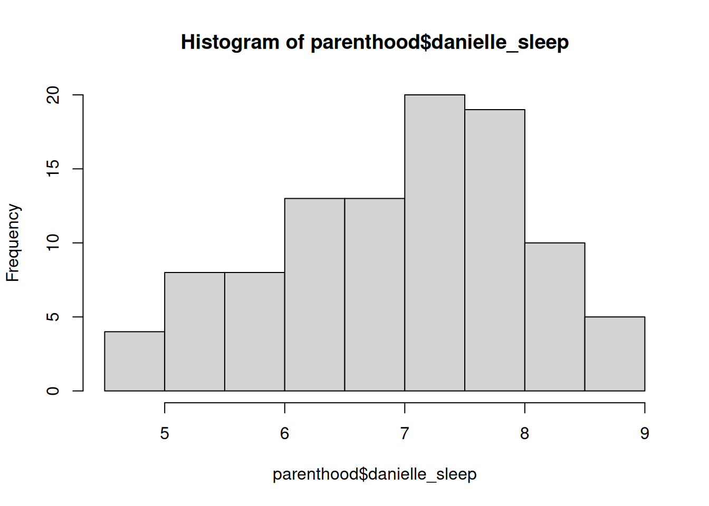
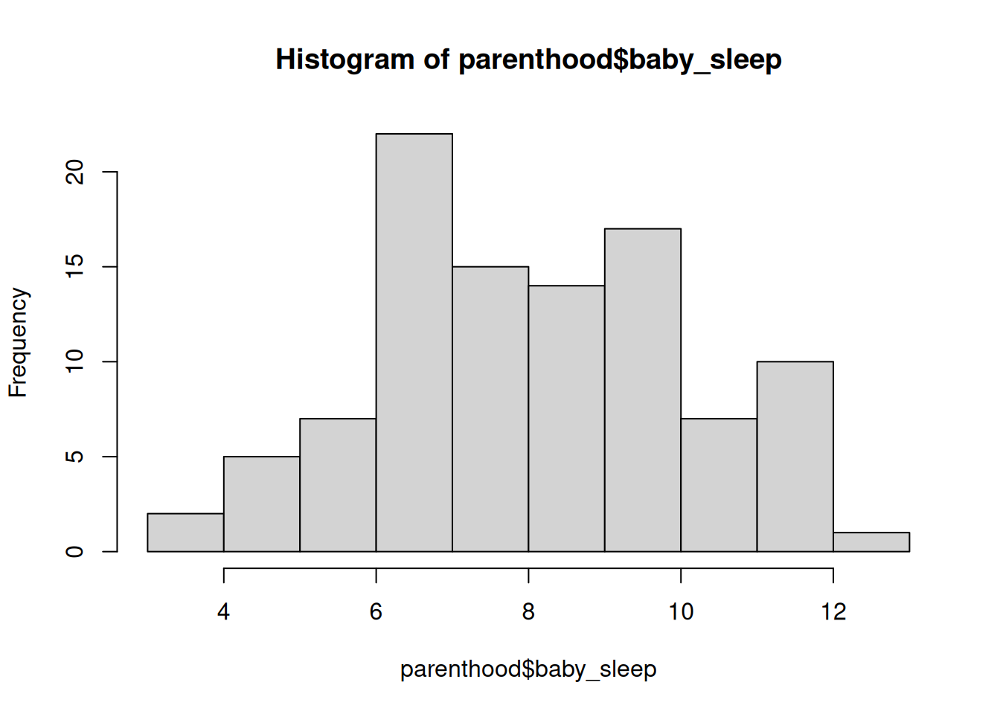
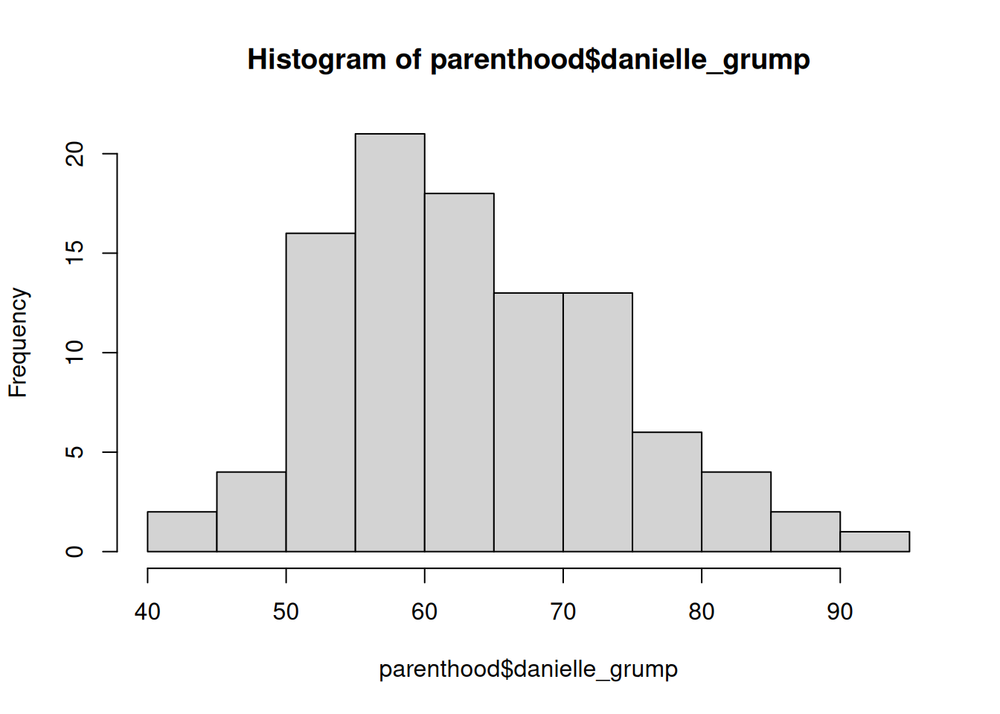
parenthood data set.
One thing to note: just because R can calculate dozens of different statistics doesn’t mean you should report all of them. If I were writing this up for a report, I’d probably pick out those statistics that are of most interest to me (and to my readership), and then put them into a nice, simple table.16 Notice that I’m not getting enough sleep. This isn’t good practice, but other parents tell me that it’s standard practice.
16 Actually, even that table is more than I’d bother with. In practice most people pick one measure of central tendency, and one measure of variability only.
We can draw scatterplots to give us a general sense of how closely related two variables are. Ideally though, we might want to say a bit more about it than that. For instance, let’s compare the relationship between danielle_sleep and danielle_grump with that between baby_sleep and danielle_grump:

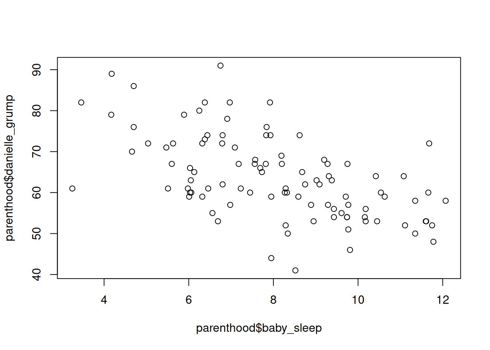
danielle_sleep and danielle_grump (left) and the relationship between baby_sleep and danielle_grump (right).
When looking at these two plots side by side, it’s clear that the relationship is qualitatively the same in both cases: more sleep equals less grump! However, it’s also pretty obvious that the relationship between danielle_sleep and danielle_grump is stronger than the relationship between baby_sleep and danielle_grump. The plot on the left is “neater” than the one on the right. What it feels like is that if you want to predict what my mood is, it’d help you a little bit to know how many hours my son slept, but it’d be more helpful to know how many hours I slept.
In contrast, if we compare the scatterplot of baby_sleep v danielle_grump to the scatterplot of baby_sleep v danielle_sleep, the overall strength of the relationship is the same, but the direction is different. That is, if my son sleeps more, I get more sleep (positive relationship), but if he sleeps more then I get less grumpy (negative relationship).
We can make these ideas a bit more explicit by introducing the idea of a correlation coefficient (or, more specifically, Pearson’s correlation coefficient), which is traditionally denoted by \(r\). The correlation coefficient between two variables \(X\) and \(Y\) (sometimes denoted \(r_{XY}\)), which we’ll define more precisely in the next section, is a measure that varies from \(-1\) to \(1\). When \(r = -1\) it means that we have a perfect negative relationship, and when \(r = 1\) it means we have a perfect positive relationship. When \(r = 0\), there’s no relationship at all. Figure 5.8 shows several scatterplots illustrating what different correlations look like.
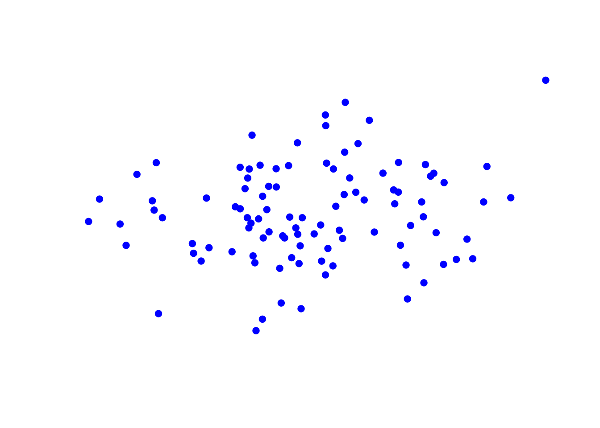
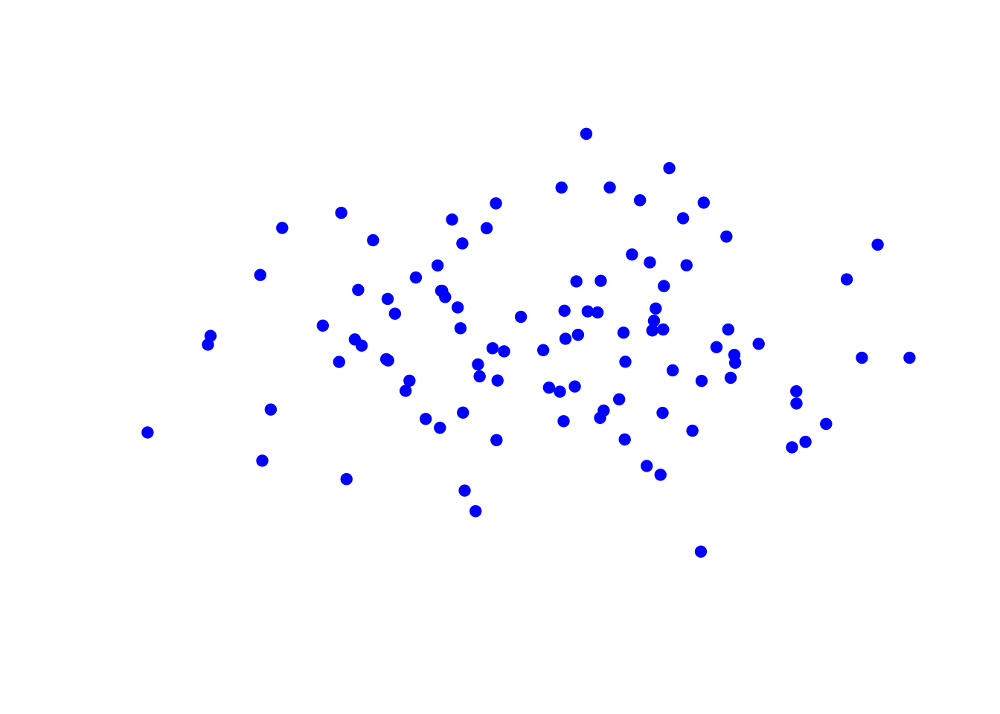
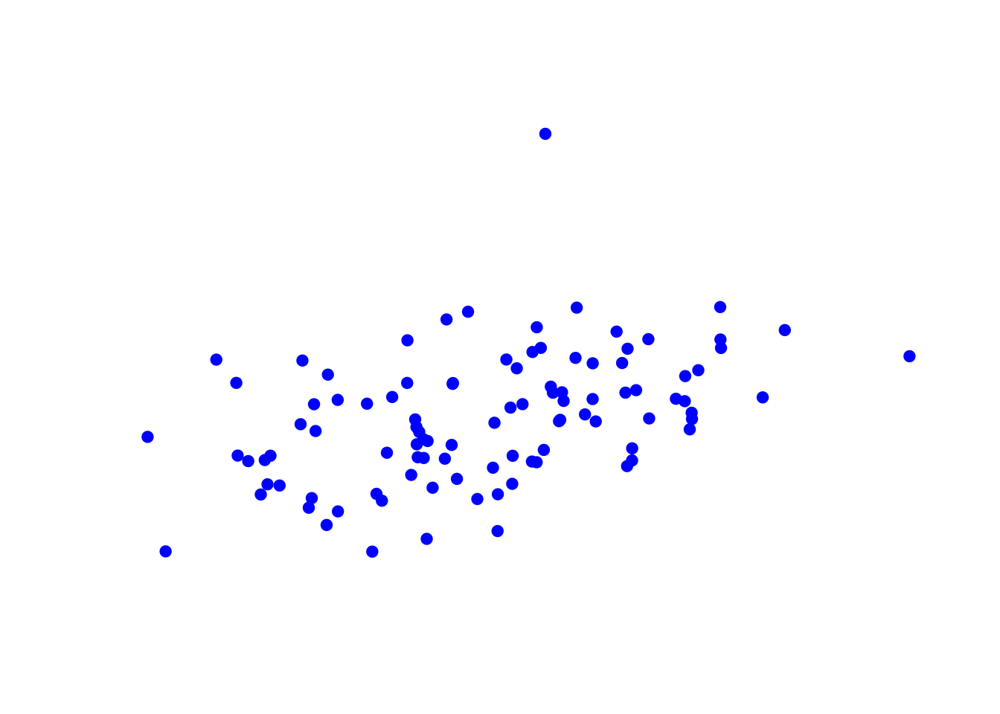
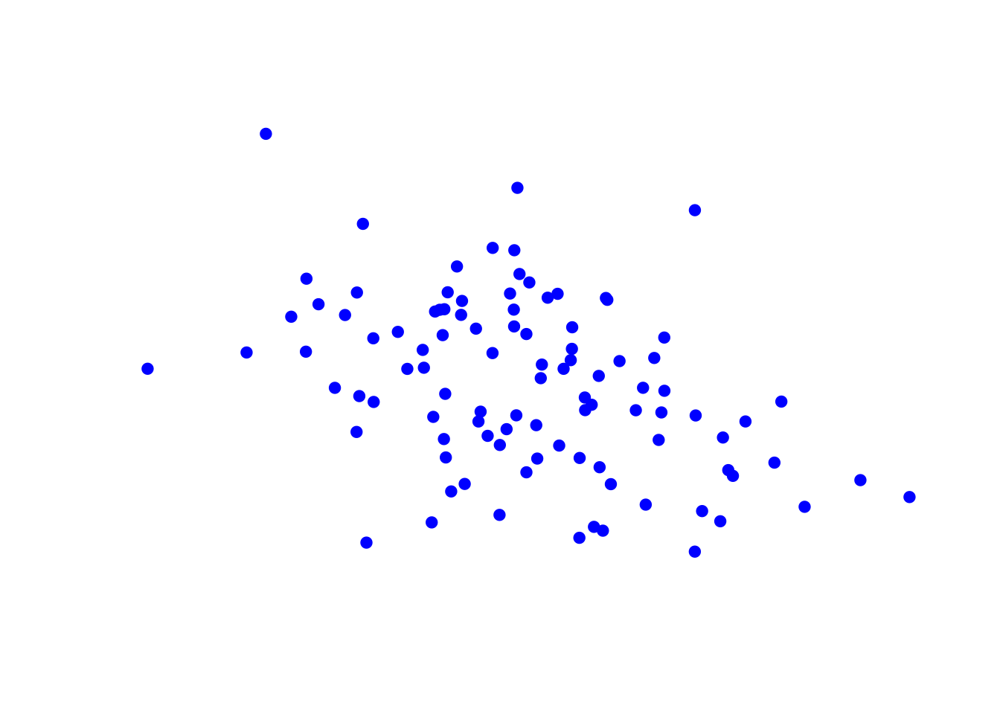
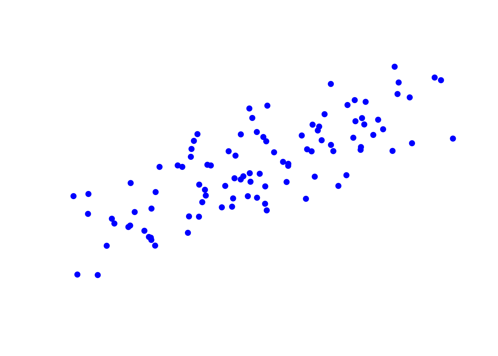
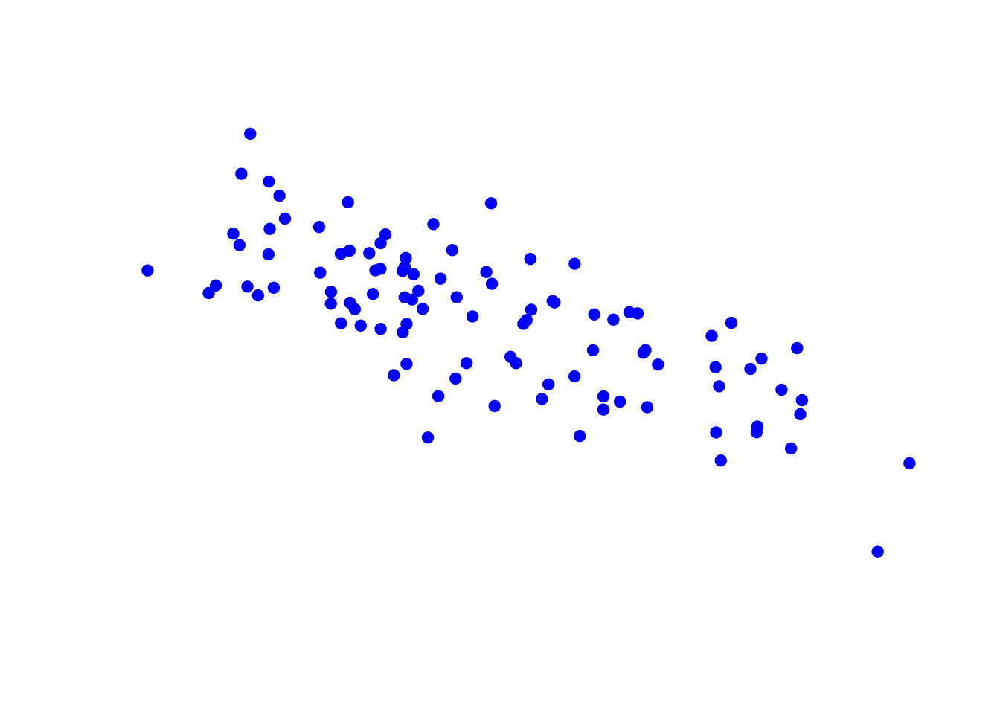
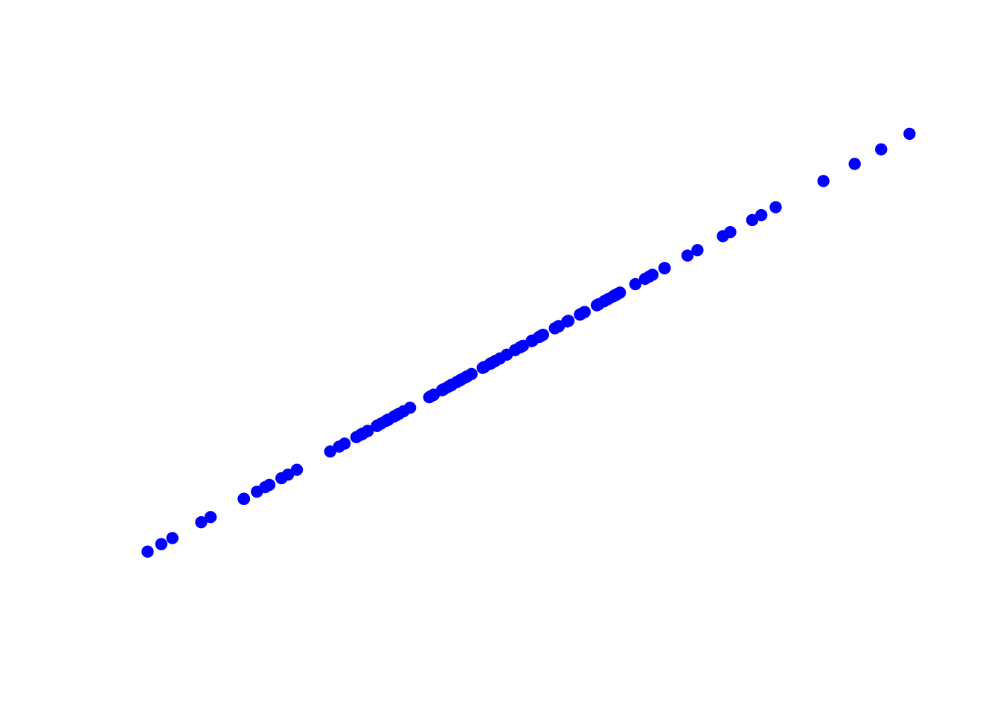
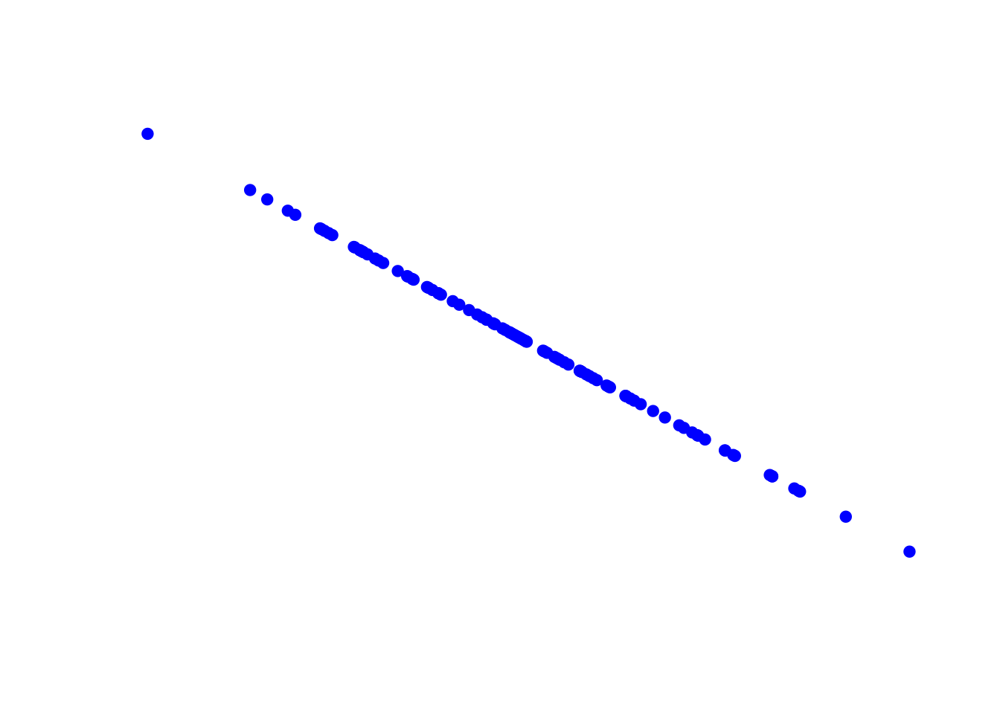
The formula for the Pearson’s correlation coefficient can be written in several different ways. I think the simplest way to write down the formula is to break it into two steps. Firstly, let’s introduce the idea of a covariance. The covariance between two variables \(X\) and \(Y\) is a generalisation of the notion of the variance; it’s a mathematically simple way of describing the relationship between two variables that isn’t terribly informative to humans:
\[ \text{Cov}(X,Y) = \frac{1}{N-1} \sum_{i=1}^N \left( X_i - \bar{X} \right) \left( Y_i - \bar{Y} \right) \]
Because we’re multiplying (i.e., taking the “product” of) a quantity that depends on \(X\) by a quantity that depends on \(Y\) and then averaging,17 you can think of the formula for the covariance as an “average cross product” between \(X\) and \(Y\). The covariance has the nice property that, if \(X\) and \(Y\) are entirely unrelated, then the covariance is exactly zero. If the relationship between them is positive then the covariance is also positive; and if the relationship is negative then the covariance is also negative. In other words, the covariance captures the basic qualitative idea of correlation. Unfortunately, the raw magnitude of the covariance isn’t easy to interpret: it depends on the units in which \(X\) and \(Y\) are expressed, and worse yet, the actual units that the covariance itself is expressed in are really weird. For instance, if \(X\) refers to the danielle_sleep variable (units: hours) and \(Y\) refers to the danielle_grump variable (units: grumps), then the units for their covariance are “hours \(\times\) grumps”. And I have no freaking idea what that would even mean.
17 Just like we saw with the variance and the standard deviation, in practice we divide by \(N-1\) rather than \(N\).
18 This is an oversimplification, but it’ll do for our purposes.
The Pearson correlation coefficient \(r\) fixes this interpretation problem by standardising the covariance, in pretty much the exact same way that the \(z\)-score standardises a raw score: by dividing by the standard deviation. However, because we have two variables that contribute to the covariance, the standardisation only works if we divide by both standard deviations.18 In other words, the correlation between \(X\) and \(Y\) can be written as follows:
\[ r_{XY} = \frac{\text{Cov}(X,Y)}{ \hat{\sigma}_X \ \hat{\sigma}_Y} \]
By doing this standardisation, not only do we keep all of the nice properties of the covariance discussed earlier, but the actual values of \(r\) are on a meaningful scale: \(r= 1\) implies a perfect positive relationship, and \(r = -1\) implies a perfect negative relationship. I’ll expand a little more on this point later, in Interpreting a correlation. But before I do, let’s look at how to calculate correlations in R.
Calculating correlations in R can be done using the cor() command. The simplest way to use the command is to specify two input arguments x and y, each one corresponding to one of the variables. The following extract illustrates the basic usage of the function:19
19 R has a function called cor.test() that runs a hypothesis test for a single correlation, and the psych package contains a version called corr.test() that can run tests for every correlation in a correlation matrix.
cor(x = parenthood$danielle_sleep, y = parenthood$danielle_grump)[1] -0.903384However, the cor() function is a bit more powerful than this simple example suggests. For example, you can also calculate a complete “correlation matrix”, between all pairs of variables in the data frame:20
20 An alternative usage of cor() is to correlate one set of variables with another subset of variables. If X and Y are both data frames with the same number of rows, then cor(x = X, y = Y) will produce a correlation matrix that correlates all variables in X with all variables in Y.
# correlate all pairs of variables in "parenthood":
cor(x = parenthood) danielle_sleep baby_sleep danielle_grump day
danielle_sleep 1.00000000 0.62794934 -0.90338404 -0.09840768
baby_sleep 0.62794934 1.00000000 -0.56596373 -0.01043394
danielle_grump -0.90338404 -0.56596373 1.00000000 0.07647926
day -0.09840768 -0.01043394 0.07647926 1.00000000Naturally, in real life you don’t see many correlations of 1. So how should you interpret a correlation of, say \(r= .4\)? The honest answer is that it really depends on what you want to use the data for, and on how strong the correlations in your field tend to be. A friend of mine in engineering once argued that any correlation less than \(.95\) is completely useless (I think he was exaggerating, even for engineering). On the other hand there are real cases – even in psychology – where you should really expect correlations that strong. For instance, one of the benchmark data sets used to test theories of how people judge similarities is so clean that any theory that can’t achieve a correlation of at least \(.9\) really isn’t deemed to be successful. However, when looking for (say) elementary correlates of intelligence (e.g., inspection time, response time), if you get a correlation above \(.3\) you’re doing very very well. In short, the interpretation of a correlation depends a lot on the context. That said, the rough guide below is pretty typical.
| Correlation | Strength | Direction |
|---|---|---|
| -1.0 to -0.9 | Very strong | Negative |
| -0.9 to -0.7 | Strong | Negative |
| -0.7 to -0.4 | Moderate | Negative |
| -0.4 to -0.2 | Weak | Negative |
| -0.2 to 0 | Negligible | Negative |
| 0 to 0.2 | Negligible | Positive |
| 0.2 to 0.4 | Weak | Positive |
| 0.4 to 0.7 | Moderate | Positive |
| 0.7 to 0.9 | Strong | Positive |
| 0.9 to 1.0 | Very strong | Positive |
However, something that can never be stressed enough is that you should always look at the scatterplot before attaching any interpretation to the data. A correlation might not mean what you think it means. The classic illustration of this is “Anscombe’s Quartet” (Anscombe, 1973), which is a collection of four data sets. Each data set has two variables, an \(X\) and a \(Y\). For all four data sets the mean value for \(X\) is 9 and the mean for \(Y\) is 7.5. The standard deviations for all \(X\) variables are almost identical, as are those for the \(Y\) variables. And in each case the correlation between \(X\) and \(Y\) is \(r = 0.816\). You can verify this yourself, since I happen to have saved the data in a file21 called anscombesquartet.Rdata. The commands would be:
21 It’s also stored as a dataset that comes distributed with R. Just type anscombe at the command prompt.
load("data/anscombesquartet.Rdata")
cor(x1, y1)[1] 0.8164205cor(x2, y2)[1] 0.8162365and so on.
You’d think that these four data sets would look pretty similar to one another. They do not. If we draw scatterplots of \(X\) against \(Y\) for all four variables, we see that all four of these are spectacularly different to each other:
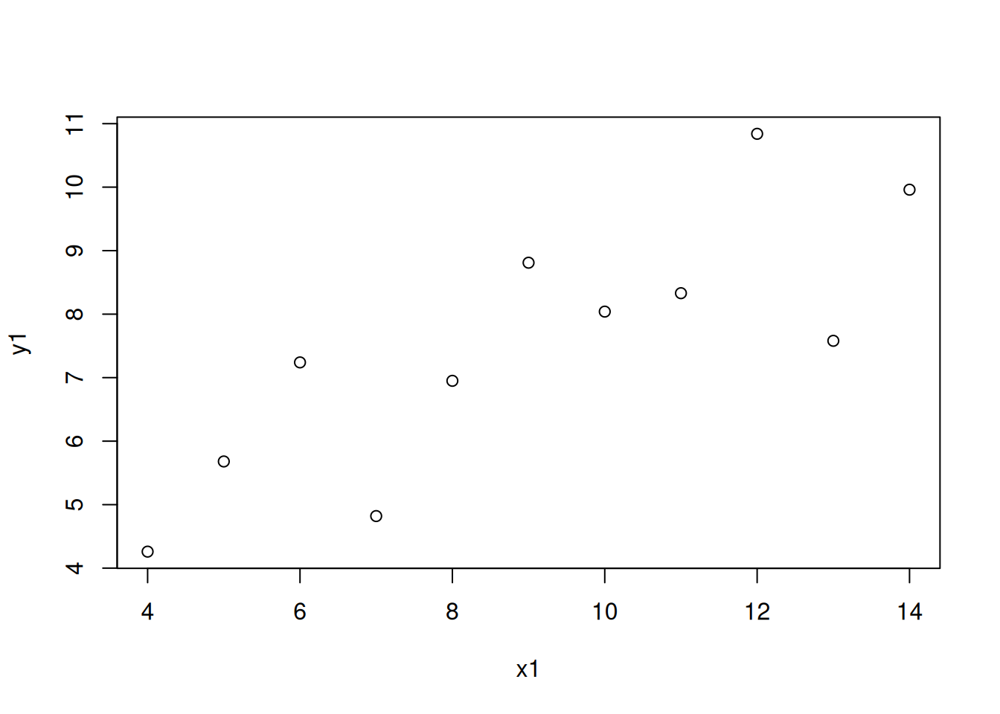
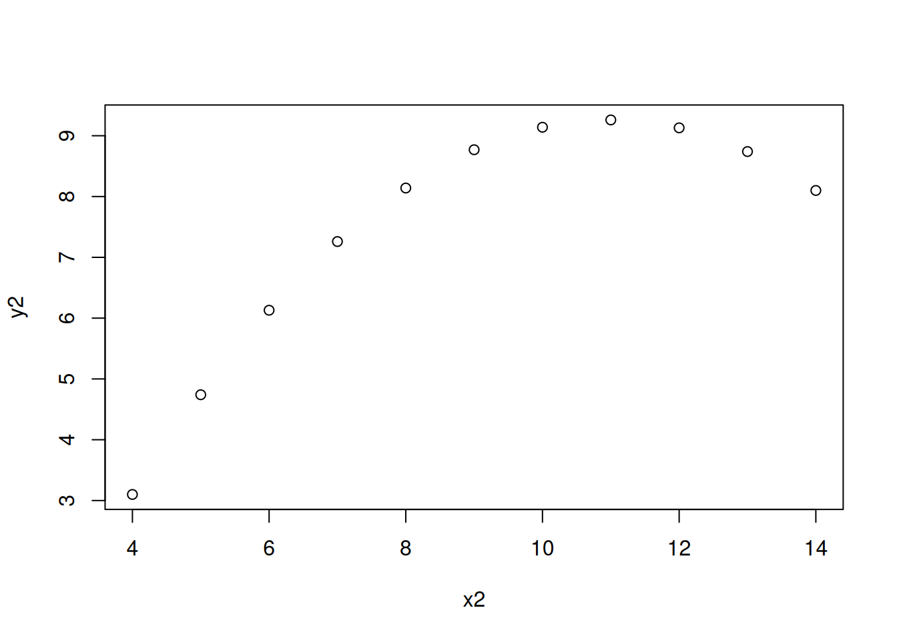
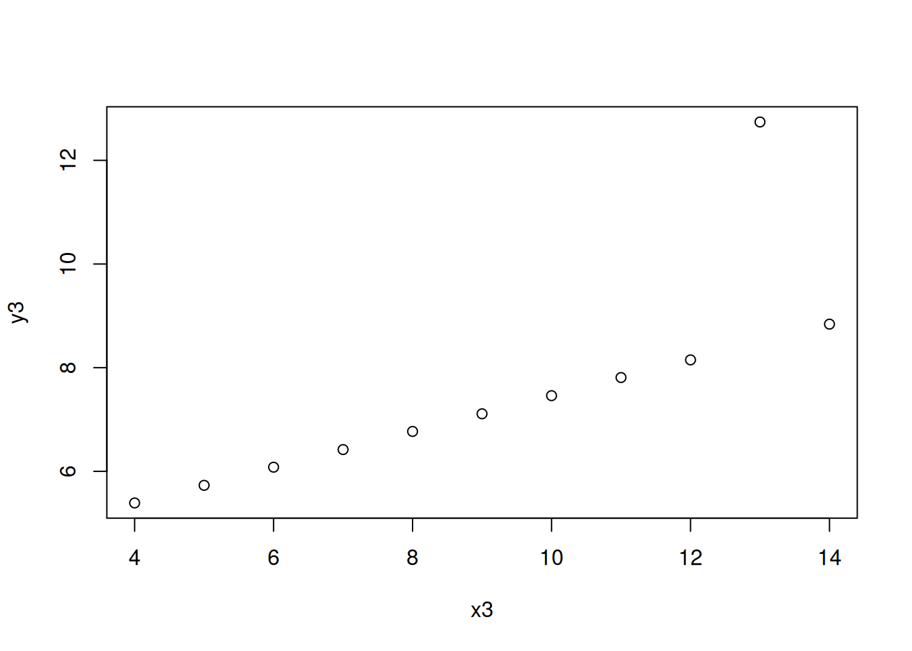
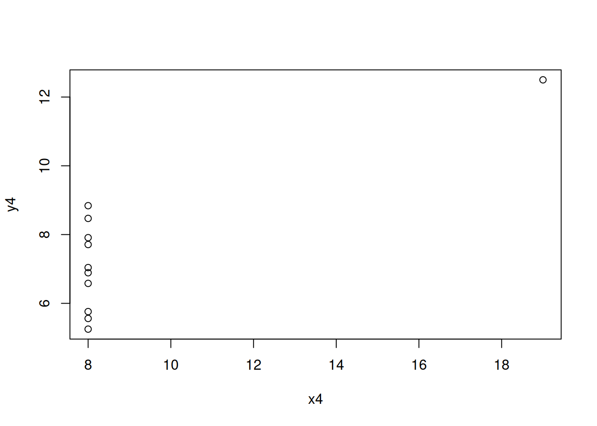
The lesson here, which so very many people seem to forget in real life is “always graph your raw data”. This will be the focus of Chapter 6.
The Pearson correlation coefficient is useful for a lot of things, but it does have shortcomings. One issue in particular stands out: what it actually measures is the strength of the linear relationship between two variables. In other words, what it gives you is a measure of the extent to which the data all tend to fall on a single, perfectly straight line. Often, this is a pretty good approximation to what we mean when we say “relationship”, and so the Pearson correlation is a good thing to calculate. Sometimes, it isn’t.
One very common situation where the Pearson correlation isn’t quite the right thing to use arises when an increase in one variable \(X\) really is reflected in an increase in another variable \(Y\), but the nature of the relationship isn’t necessarily linear. An example of this might be the relationship between effort and reward when studying for an exam. If you put in zero effort (\(X\)) into learning a subject, then you should expect a grade of 0% (\(Y\)). However, a little bit of effort will cause a massive improvement: just turning up to lectures means that you learn a fair bit, and if you just turn up to classes, and scribble a few things down so your grade might rise to 35%, all without a lot of effort. However, you just don’t get the same effect at the other end of the scale. As everyone knows, it takes a lot more effort to get a grade of 90% than it takes to get a grade of 55%. What this means is that, if I’ve got data looking at study effort and grades, there’s a pretty good chance that Pearson correlations will be misleading.
To illustrate, consider the data showing the relationship between hours worked and grade received for 10 students taking some class. The curious thing about this – highly fictitious – data set is that increasing your effort always increases your grade. It might be by a lot or it might be by a little, but increasing effort will never decrease your grade. The data are stored in effort.Rdata:
load("data/effort.Rdata")
who(TRUE) -- Name -- -- Class -- -- Size --
AAD numeric 1
AD numeric 5
afl_finalists factor 400
afl_margins numeric 176
blowouts logical 176
clin_trial data.frame 18 x 3
$drug factor 18
$therapy factor 18
$mood_gain numeric 18
dataset numeric 10
effort data.frame 10 x 2
$hours numeric 10
$grade numeric 10
f2 character 400
parenthood data.frame 100 x 4
$danielle_sleep numeric 100
$baby_sleep numeric 100
$danielle_grump numeric 100
$day integer 100
X numeric 5
x_bar numeric 1
x1 numeric 11
x2 numeric 11
x3 numeric 11
x4 numeric 11
y1 numeric 11
y2 numeric 11
y3 numeric 11
y4 numeric 11 The raw data look like this:
effort hours grade
1 2 13
2 76 91
3 40 79
4 6 14
5 16 21
6 28 74
7 27 47
8 59 85
9 46 84
10 68 88Figure 5.10 plots the relationship between hours worked and grade received for these data.
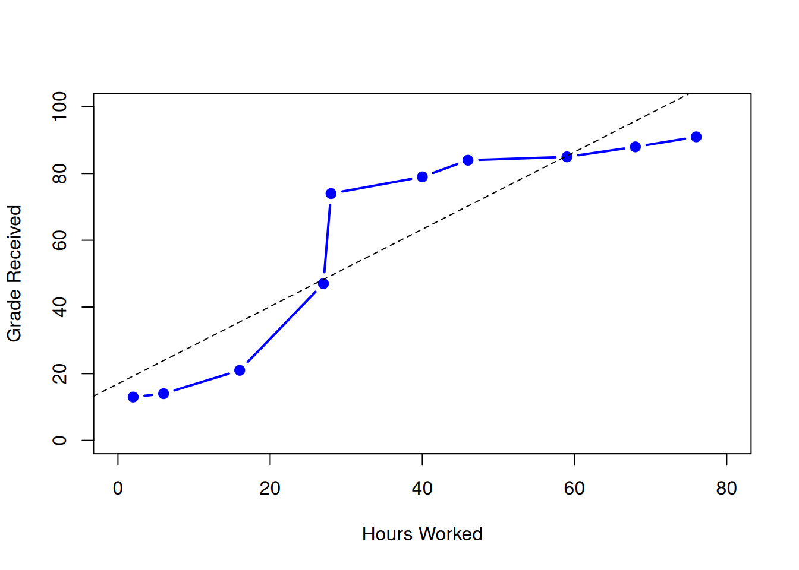
effort data. Each circle corresponds to one student. The dashed line shows the best-fitting linear (Pearson) relationship between the two variables; the solid line connects the points in order of hours worked, highlighting the perfect monotonic (rank order) relationship between the two.
If we run a standard Pearson correlation, it shows a strong relationship between hours worked and grade received,
cor(effort$hours, effort$grade)[1] 0.909402but this doesn’t actually capture the observation that increasing hours worked always increases the grade. There’s a sense here in which we want to be able to say that the correlation is perfect but for a somewhat different notion of what a “relationship” is. What we’re looking for is something that captures the fact that there is a perfect ordinal relationship here. That is, if student 1 works more hours than student 2, then we can guarantee that student 1 will get the better grade. That’s not what a correlation of \(r = .91\) says at all.
How should we address this? Actually, it’s really easy: if we’re looking for ordinal relationships, all we have to do is treat the data as if it were ordinal scale! So, instead of measuring effort in terms of “hours worked”, lets rank all 10 of our students in order of hours worked. That is, student 1 did the least work out of anyone (2 hours) so they get the lowest rank (rank = 1). Student 4 was the next laziest, putting in only 6 hours of work in over the whole semester, so they get the next lowest rank (rank = 2). Notice that I’m using “rank = 1” to mean “low rank”. Sometimes in everyday language we talk about “rank = 1” to mean “top rank” rather than “bottom rank”. So be careful: you can rank “from smallest value to largest value” (i.e., small equals rank 1) or you can rank “from largest value to smallest value” (i.e., large equals rank 1). In this case, I’m ranking from smallest to largest, because that’s the default way that R does it. But in real life, it’s really easy to forget which way you set things up, so you have to put a bit of effort into remembering!
We can get R to construct these rankings using the rank() function, like this:
hours_rank <- rank(effort$hours) # rank students by hours worked
grade_rank <- rank(effort$grade) # rank students by grade receivedAs it turns out, these two rankings are identical, so if we now correlate them we get a perfect relationship:
cor(hours_rank, grade_rank)[1] 1What we’ve just re-invented is Spearman’s rank order correlation, usually denoted \(\rho\) to distinguish it from the Pearson correlation \(r\). We can calculate Spearman’s \(\rho\) using R in two different ways. Firstly we could do it the way I just showed, using the rank() function to construct the rankings, and then calculate the Pearson correlation on these ranks. However, that’s way too much effort to do every time. It’s much easier to just specify the method argument of the cor() function.
cor(effort$hours, effort$grade, method = "spearman")[1] 1The default value of the method argument is "pearson", which is why we didn’t have to specify it earlier on when we were doing Pearson correlations.
correlate() functionAs we’ve seen, the cor() function works pretty well, and handles many of the situations that you might be interested in. One thing that many beginners find frustrating, however, is the fact that it’s not built to handle non-numeric variables. From a statistical perspective, this is perfectly sensible: Pearson and Spearman correlations are only designed to work for numeric variables, so the cor() function spits out an error.
Here’s what I mean. Suppose you were keeping track of how many hours you worked in any given day, and counted how many tasks you completed. If you were doing the tasks for money, you might also want to keep track of how much pay you got for each job. It would also be sensible to keep track of the weekday on which you actually did the work: most of us don’t work as much on Saturdays or Sundays. If you did this for 7 weeks, you might end up with a data set that looks like this one:
load("data/work.Rdata")
who(TRUE) -- Name -- -- Class -- -- Size --
AAD numeric 1
AD numeric 5
afl_finalists factor 400
afl_margins numeric 176
blowouts logical 176
clin_trial data.frame 18 x 3
$drug factor 18
$therapy factor 18
$mood_gain numeric 18
dataset numeric 10
effort data.frame 10 x 2
$hours numeric 10
$grade numeric 10
f2 character 400
grade_rank numeric 10
hours_rank numeric 10
parenthood data.frame 100 x 4
$danielle_sleep numeric 100
$baby_sleep numeric 100
$danielle_grump numeric 100
$day integer 100
work data.frame 49 x 7
$hours numeric 49
$tasks numeric 49
$pay numeric 49
$day integer 49
$weekday factor 49
$week numeric 49
$day_type factor 49
X numeric 5
x_bar numeric 1
x1 numeric 11
x2 numeric 11
x3 numeric 11
x4 numeric 11
y1 numeric 11
y2 numeric 11
y3 numeric 11
y4 numeric 11 head(work) hours tasks pay day weekday week day_type
1 7.2 14 41 1 Tuesday 1 weekday
2 7.4 11 39 2 Wednesday 1 weekday
3 6.6 14 13 3 Thursday 1 weekday
4 6.5 22 47 4 Friday 1 weekday
5 3.1 5 4 5 Saturday 1 weekend
6 3.0 7 12 6 Sunday 1 weekendObviously, I’d like to know something about how all these variables correlate with one another. I could correlate hours with pay quite easily using cor(), like so:
cor(work$hours, work$pay)[1] 0.7604283But what if I wanted a quick and easy way to calculate all pairwise correlations between the numeric variables? I can’t just input the work data frame, because it contains two factor variables, weekday and day_type. If I try this, I get an error:
cor(work)Error in `cor()`:
! 'x' must be numericIn order to get the correlations that I want using the cor() function, what I need to do is create a new data frame that doesn’t contain the factor variables, and then feed that new data frame into the cor() function. It’s not actually very hard to do that, and I’ll talk about how to do it properly in Chapter 7. But it would be nice to have some function that is smart enough to just ignore the factor variables. That’s where the correlate() function in the lsr package can be handy. If you feed it a data frame that contains factors, it knows to ignore them, and returns the pairwise correlations only between the numeric variables:
correlate(work)
CORRELATIONS
============
- correlation type: pearson
- correlations shown only when both variables are numeric
hours tasks pay day weekday week day_type
hours . 0.800 0.760 -0.049 . 0.018 .
tasks 0.800 . 0.720 -0.072 . -0.013 .
pay 0.760 0.720 . 0.137 . 0.196 .
day -0.049 -0.072 0.137 . . 0.990 .
weekday . . . . . . .
week 0.018 -0.013 0.196 0.990 . . .
day_type . . . . . . .The output here shows a . whenever one of the variables is non-numeric. It also shows a . whenever a variable is correlated with itself (it’s not a meaningful thing to do). The correlate() function can also do Spearman correlations, by specifying the corr.method to use:
correlate(work, corr.method = "spearman")
CORRELATIONS
============
- correlation type: spearman
- correlations shown only when both variables are numeric
hours tasks pay day weekday week day_type
hours . 0.805 0.745 -0.047 . 0.010 .
tasks 0.805 . 0.730 -0.068 . -0.008 .
pay 0.745 0.730 . 0.094 . 0.154 .
day -0.047 -0.068 0.094 . . 0.990 .
weekday . . . . . . .
week 0.010 -0.008 0.154 0.990 . . .
day_type . . . . . . .Obviously, there’s no new functionality in the correlate() function, and any advanced R user would be perfectly capable of using the cor() function to get these numbers out. But if you’re not yet comfortable with extracting a subset of a data frame, the correlate() function is for you.
There’s one last topic that I want to discuss briefly in this chapter, and that’s the issue of missing data. Real data sets very frequently turn out to have missing values: perhaps someone forgot to fill in a particular survey question, for instance. Missing data can be the source of a lot of tricky issues, most of which I’m going to gloss over. However, at a minimum, you need to understand the basics of handling missing data in R.
Let’s start with the simplest case, in which you’re trying to calculate descriptive statistics for a single variable which has missing data. In R, this means that there will be NA values in your data vector. Let’s create a variable like that:
partial <- c(10, 20, NA, 30)Let’s assume that you want to calculate the mean of this variable. By default, R assumes that you want to calculate the mean using all four elements of this vector, which is probably the safest thing for a dumb automaton to do, but it’s rarely what you actually want. Why not? Well, remember that the basic interpretation of NA is “I don’t know what this number is”. This means that 1 + NA = NA: if I add 1 to some number that I don’t know (i.e., the NA) then the answer is also a number that I don’t know. As a consequence, if you don’t explicitly tell R to ignore the NA values, and the data set does have missing values, then the output will itself be a missing value. If I try to calculate the mean of the partial vector, without doing anything about the missing value, here’s what happens:
mean(x = partial)[1] NATechnically correct, but deeply unhelpful.
To fix this, all of the descriptive statistics functions that I’ve discussed in this chapter (with the exception of cor() which is a special case I’ll discuss below) have an optional argument called na.rm, which is shorthand for “remove NA values”. By default, na.rm = FALSE, so R does nothing about the missing data problem. Let’s try setting na.rm = TRUE and see what happens:
mean(x = partial, na.rm = TRUE)[1] 20Notice that the mean is 20 (i.e., 60 / 3) and not 15. When R ignores a NA value, it genuinely ignores it. In effect, the calculation above is identical to what you’d get if you asked for the mean of the three-element vector c(10, 20, 30).
As indicated above, this isn’t unique to the mean() function. Pretty much all of the other functions that I’ve talked about in this chapter have an na.rm argument that indicates whether it should ignore missing values. However, its behaviour is the same for all these functions, so I won’t waste everyone’s time by demonstrating it separately for each one.
I mentioned earlier that the cor() function is a special case. It doesn’t have an na.rm argument, because the story becomes a lot more complicated when more than one variable is involved. What it does have is an argument called use which does roughly the same thing, but you need to think a little more carefully about what you want this time. To illustrate the issues, let’s open up a data set that has missing values, parenthood2.Rdata. This file contains the same data as the original parenthood data, but with some values deleted. It contains a single data frame, parenthood2:
load("data/parenthood2.Rdata")
print(parenthood2) danielle_sleep baby_sleep danielle_grump day
1 7.59 NA 56 1
2 7.91 11.66 60 2
3 5.14 7.92 82 3
4 7.71 9.61 55 4
5 6.68 9.75 NA 5
6 5.99 5.04 72 6
BLAH BLAH BLAHIf I calculate my descriptive statistics using the describe() function
describe(parenthood2) vars n mean sd median trimmed mad min max range
danielle_sleep 1 91 6.98 1.02 7.03 7.02 1.13 4.84 9.00 4.16
baby_sleep 2 89 8.11 2.05 8.20 8.13 2.28 3.25 12.07 8.82
danielle_grump 3 92 63.15 9.85 61.00 62.66 10.38 41.00 89.00 48.00
day 4 100 50.50 29.01 50.50 50.50 37.06 1.00 100.00 99.00
skew kurtosis se
danielle_sleep -0.33 -0.73 0.11
baby_sleep -0.09 -0.59 0.22
danielle_grump 0.38 -0.31 1.03
day 0.00 -1.24 2.90The original book truncated this table’s columns (appending a trailing BLAH to each row) rather than its rows, purely because of the printed page’s fixed width. Since a Quarto book has no such constraint, the live output above is shown in full rather than reproducing that particular truncation.
we can see from the n column that there are 9 missing values for danielle_sleep, 11 missing values for baby_sleep and 8 missing values for danielle_grump.22 Suppose what I would like is a correlation matrix. And let’s also suppose that I don’t bother to tell R how to handle those missing values. Here’s what happens:
22 It’s worth noting that, even though we have missing data for each of these variables, the output doesn’t contain any NA values. This is because, while describe() also has an na.rm argument, the default value for this function is na.rm = TRUE.
cor(parenthood2) danielle_sleep baby_sleep danielle_grump day
danielle_sleep 1 NA NA NA
baby_sleep NA 1 NA NA
danielle_grump NA NA 1 NA
day NA NA NA 1Annoying, but it kind of makes sense. If I don’t know what some of the values of danielle_sleep and baby_sleep actually are, then I can’t possibly know what the correlation between these two variables is either, since the formula for the correlation coefficient makes use of every single observation in the data set. Once again, it makes sense: it’s just not particularly helpful.
To make R behave more sensibly in this situation, you need to specify the use argument to the cor() function. There are several different values that you can specify for this, but the two that we care most about in practice tend to be "complete.obs" and "pairwise.complete.obs". If we specify use = "complete.obs", R will completely ignore all cases (i.e., all rows in our parenthood2 data frame) that have any missing values at all. So, for instance, if you look back at the extract earlier, notice that observation 1 (i.e., day 1) of the parenthood2 data set is missing the value for baby_sleep, but is otherwise complete? Well, if you choose use = "complete.obs" R will ignore that row completely: that is, even when it’s trying to calculate the correlation between danielle_sleep and danielle_grump, observation 1 will be ignored, because the value of baby_sleep is missing for that observation. Here’s what we get:
cor(parenthood2, use = "complete.obs") danielle_sleep baby_sleep danielle_grump day
danielle_sleep 1.00000000 0.6394985 -0.89951468 0.06132891
baby_sleep 0.63949845 1.0000000 -0.58656066 0.14555814
danielle_grump -0.89951468 -0.5865607 1.00000000 -0.06816586
day 0.06132891 0.1455581 -0.06816586 1.00000000The other possibility that we care about, and the one that tends to get used more often in practice, is to set use = "pairwise.complete.obs". When we do that, R only looks at the variables that it’s trying to correlate when determining what to drop. So, for instance, since the only missing value for observation 1 of parenthood2 is for baby_sleep R will only drop observation 1 when baby_sleep is one of the variables involved: and so R keeps observation 1 when trying to correlate danielle_sleep and danielle_grump. When we do it this way, here’s what we get:
cor(parenthood2, use = "pairwise.complete.obs") danielle_sleep baby_sleep danielle_grump day
danielle_sleep 1.00000000 0.61472303 -0.903442442 -0.076796665
baby_sleep 0.61472303 1.00000000 -0.567802669 0.058309485
danielle_grump -0.90344244 -0.56780267 1.000000000 0.005833399
day -0.07679667 0.05830949 0.005833399 1.000000000Similar, but not quite the same. It’s also worth noting that the correlate() function (in the lsr package) automatically uses the “pairwise complete” method:
correlate(parenthood2)
CORRELATIONS
============
- correlation type: pearson
- correlations shown only when both variables are numeric
danielle_sleep baby_sleep danielle_grump day
danielle_sleep . 0.615 -0.903 -0.077
baby_sleep 0.615 . -0.568 0.058
danielle_grump -0.903 -0.568 . 0.006
day -0.077 0.058 0.006 .The two approaches have different strengths and weaknesses. The “pairwise complete” approach has the advantage that it keeps more observations, so you’re making use of more of your data and (as we’ll discuss in tedious detail in Chapter 10) it improves the reliability of your estimated correlation. On the other hand, it means that every correlation in your correlation matrix is being computed from a slightly different set of observations, which can be awkward when you want to compare the different correlations that you’ve got.
So which method should you use? It depends a lot on why you think your values are missing, and probably depends a little on how paranoid you are. For instance, if you think that the missing values were “chosen” completely randomly23 then you’ll probably want to use the pairwise method. If you think that missing data are a cue to thinking that the whole observation might be rubbish (e.g., someone just selecting arbitrary responses in your questionnaire), but that there’s no pattern to which observations are “rubbish” then it’s probably safer to keep only those observations that are complete. If you think there’s something systematic going on, in that some observations are more likely to be missing than others, then you have a much trickier problem to solve, and one that is beyond the scope of this book.
23 The technical term here is “missing completely at random” (often written MCAR for short). Makes sense, I suppose, but it does sound ungrammatical to me.
Calculating some basic descriptive statistics is one of the very first things you do when analysing real data, and descriptive statistics are much simpler to understand than inferential statistics, so like every other statistics textbook I’ve started with descriptives. In this chapter, we talked about the following topics:
In the next section we’ll move on to a discussion of how to draw pictures! Everyone loves a pretty picture, right? But before we do, I want to end on an important point. A traditional first course in statistics spends only a small proportion of the class on descriptive statistics, maybe one or two lectures at most. The vast majority of the lecturer’s time is spent on inferential statistics, because that’s where all the hard stuff is. That makes sense, but it hides the practical everyday importance of choosing good descriptives. With that in mind…
The death of one man is a tragedy. The death of millions is a statistic.
— Josef Stalin, Potsdam 1945
950,000 – 1,200,000
— Estimate of Soviet repression deaths, 1937-1938 (Ellman, 2002)
Stalin’s infamous quote about the statistical character of the death of millions is worth giving some thought. The clear intent of his statement is that the death of an individual touches us personally and its force cannot be denied, but that the deaths of a multitude are incomprehensible, and as a consequence mere statistics, more easily ignored. I’d argue that Stalin was half right. A statistic is an abstraction, a description of events beyond our personal experience, and so hard to visualise. Few if any of us can imagine what the deaths of millions is “really” like, but we can imagine one death, and this gives the lone death its feeling of immediate tragedy, a feeling that is missing from Ellman’s cold statistical description.
Yet it is not so simple: without numbers, without counts, without a description of what happened, we have no chance of understanding what really happened, no opportunity even to try to summon the missing feeling. And in truth, as I write this, sitting in comfort on a Saturday morning, half a world and a whole lifetime away from the Gulags, when I put the Ellman estimate next to the Stalin quote a dull dread settles in my stomach and a chill settles over me. The Stalinist repression is something truly beyond my experience, but with a combination of statistical data and those recorded personal histories that have come down to us, it is not entirely beyond my comprehension. Because what Ellman’s numbers tell us is this: over a two year period, Stalinist repression wiped out the equivalent of every man, woman and child currently alive in the city where I live. Each one of those deaths had its own story, was its own tragedy, and only some of those are known to us now. Even so, with a few carefully chosen statistics, the scale of the atrocity starts to come into focus.
Thus it is no small thing to say that the first task of the statistician and the scientist is to summarise the data, to find some collection of numbers that can convey to an audience a sense of what has happened. This is the job of descriptive statistics, but it’s not a job that can be done solely using the numbers. You are a data analyst, not a statistical software package. Part of your job is to take these statistics and turn them into a description. When you analyse data, it is not sufficient to list off a collection of numbers. Always remember that what you’re really trying to do is communicate with a human audience. The numbers are important, but they need to be put together into a meaningful story that your audience can interpret. That means you need to think about framing. You need to think about context. And you need to think about the individual events that your statistics are summarising.